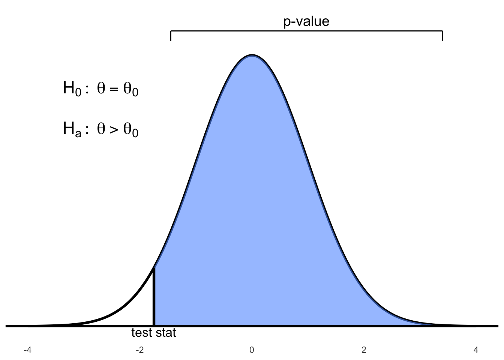
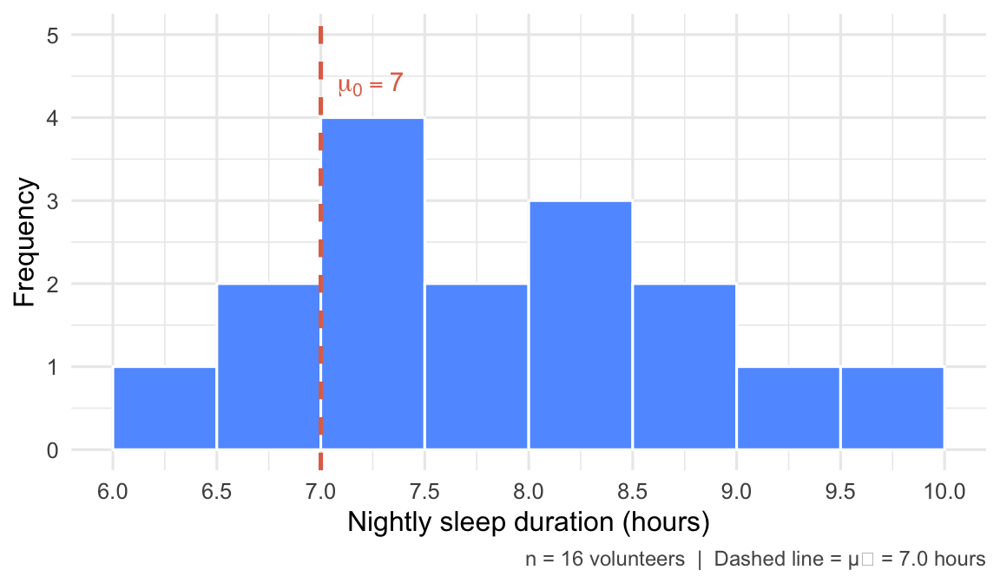
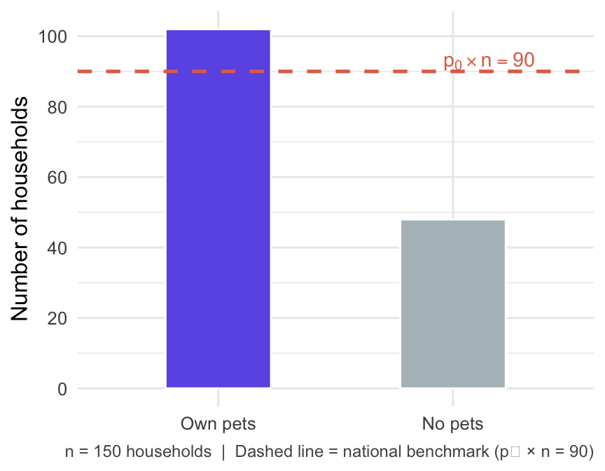
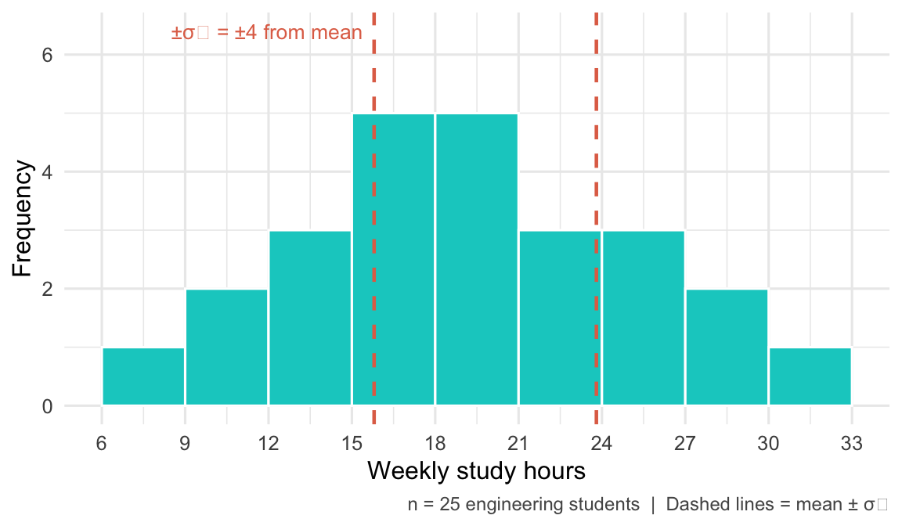
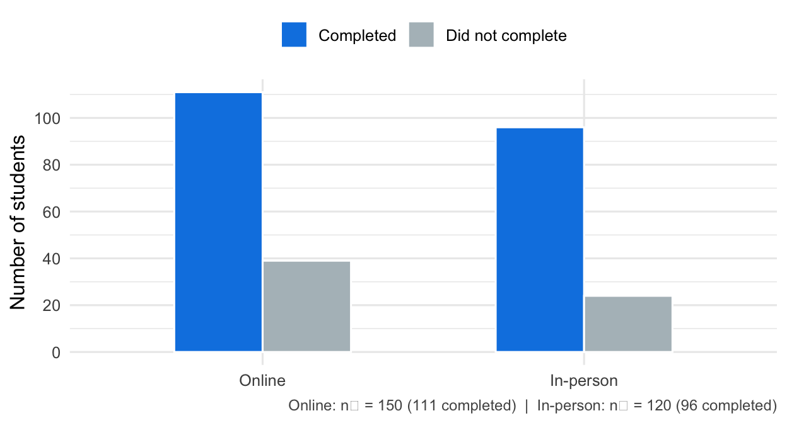
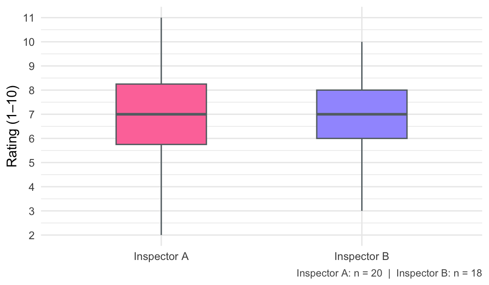
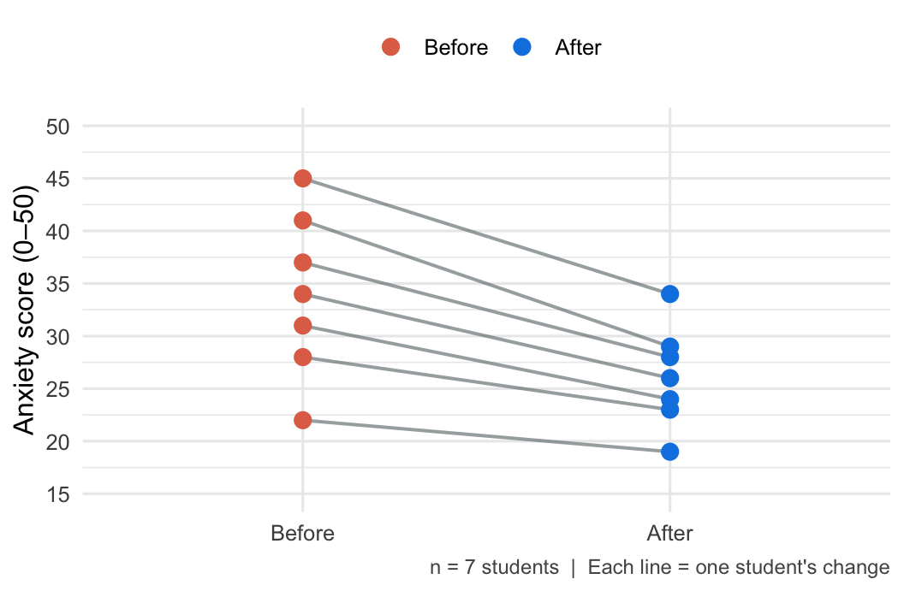

- The \(z\) statistic for a known-\(\sigma\) test is \(z^* = (\bar{x} - \mu_0) / (\sigma / \sqrt{n})\).
- For a lower-tailed alternative \(H_a: \mu < \mu_0\), the p-value is $P(Z < z^*) = $
pnorm(z_star). pnorm(q)returns \(P(Z \leq q)\) for \(Z \sim N(0,1)\).
Chapter 6 Hypothesis Tests
6.1 Introduction
A hypothesis test is a statistical method used to make inferences about a population based on sample data. It involves formulating a null hypothesis and an alternative hypothesis, calculating a test statistic, and determining the likelihood of observing the data under the null hypothesis. Each of these terms will be explained in more detail below.
Definition 6.1 An inferential procedure to determine whether there is sufficient evidence to suggest a condition for a population parameter using statistics from a sample.
The main goal of hypothesis testing is to assess the strength of evidence against a null hypothesis, which is a statement of no effect or no difference. The alternative hypothesis represents the research hypothesis or the condition we are interested in testing.
One of the steps in hypothesis testing is to calculate a p-value, which quantifies the evidence against the null hypothesis. The p-value is the probability of observing a test statistic at least as extreme as the one calculated from the sample data, assuming that the null hypothesis is true.
Definition 6.2 The p-value of a hypothesis test is the probability of observing a test statistic at least as extreme as the one calculated in step 3, assuming that the null hypothesis is true by pure chance alone.
The procedure to conduct any hypothesis often follows a standard sequence of steps.
Steps
[Reorder and start with checking assumptions first?]
Decide on a level of significance (\(\alpha\)).
State the null hypothesis (\(H_0\)) and the alternative hypothesis (\(H_a\)).
Calculate the appropriate test statistic.
Use the test statistic and a reference distribution to calculate a p-value.
Compare p-value to \(\alpha\) to make a conclusion.
We will now examine each of the steps above in more detail.
Step 1: Decide on a Level of Significance (\(\alpha\))
This is a threshold for decision making which the study or researcher is willing to implement. Depends on tolerance for consequences of errors, sample size, nature of the study, and variability.
Some common Common values are \(\alpha = 0.10\), \(\alpha = 0.05\), \(\alpha = 0.01\).
Step 2: State the Null Hypothesis and the Alternative Hypothesis
We will use the following notation for describing the null and alternative hypotheses:
Remark. Note that \(\Theta\) can represent a combination of parameters, such as \(\Theta = \Theta_1 - \Theta_2\) or \(\Theta = \Theta_1 / \Theta_2\).
A hypothesis test is a comparison between two mutually exclusive hypotheses which are:
| Null hypothesis \((H_0)\) | : | Represents the current belief or the conservative belief or the status quo. It is a statement of no effect or no difference. |
| Alternative hypothesis \((H_a)\) | : | Represents the research hypothesis, or what you are requested to test or trying to prove. |
Our choices for the null and alternative hypothesis are:
| \(H_0: \Theta = \Theta_0\) | vs. | \(H_a: \Theta > \Theta_0\) |
| \(H_0: \Theta = \Theta_0\) | vs. | \(H_a: \Theta < \Theta_0\) |
| \(H_0: \Theta = \Theta_0\) | vs. | \(H_a: \Theta \neq \Theta_0\) |
Remark. The first two hypothesis tests above are referred to as one-sided or one-tailed tests. and the third hypothesis test is referred to as a two-sided or two-tailed test.
Remark. The one-sided hypothesis test \[\begin{array}{lcl} H_0: \Theta = \Theta_0 & \quad & H_a: \Theta > \Theta_0\\ \end{array}\] is equivalent to \[\begin{array}{lcl} H_0: \Theta \leq \Theta_0 & \quad & H_a: \Theta > \Theta_0\\ \end{array}\]
and the other one-sided hypothesis test
\[\begin{array}{lcl} H_0: \Theta = \Theta_0 & \quad & H_a: \Theta < \Theta_0\\ \end{array}\] is equivalent to \[\begin{array}{lcl} H_0: \Theta \geq \Theta_0 & \quad & H_a: \Theta < \Theta_0\\ \end{array}\]
Step 3: Calculate an appropriate test statistic
Depends on the hypothesis test conducted and the information available.
Definition 6.3 \[\text{test statistic} = \frac{\text{(a statistic)} - \text{(hypothesized value of parameters under } H_0 \text{)}}{\text{standard error of statistic}}\]
The test statistic follows a reference distribution. Common distributions which thetest statistic follows are the standard normal distrubution, \(t\)-distribution, \(F\)-distribution and \(\chi^2\)-distribution.
Step 4: Calculate the p-value
We use the test statistic, reference distribution, and refer back to \(H_a\).


Figure 6.1: Right-tailed test: p-value is the area to the right of the test statistic


Figure 6.2: Left-tailed test: p-value is the area to the left of the test statistic

Figure 6.3: Two-tailed test: p-value is the total area in both tails beyond ±test statistic
Step 5: Compare p-value to level of significance \(\alpha\) and make a conclusion
If the p-value \(< \alpha\), we say there is sufficient evidence against \(H_0\) and the hypothesis test rejects \(H_0\) in favor of \(H_a\).
If the p-value \(> \alpha\), thenwe say there is insufficient evidence against \(H_0\) and we do not reject \(H_0\) (in this situation we can also say fail to reject \(H_0\)).
About the p-value of the test statistics
The p-value is a conditional probability.
It is not the probability that \(H_0\) (null hypothesis: current belief) is true.
It is: P(observed statistic value — \(H_0\)). Given \(H_0\) (the null hypothesis), because \(H_0\) gives the parameter values that we need to find required probability.
The p-value serves as a measure of the strength of the evidence against the null hypothesis (but it should not serve as a hard and fast rule for decision).
If the p-value = 0.03 (for example) all we can say is that there is 3% chance of observing the statistic value we actually observed (or one even more inconsistent with the null value).
The p-value is the chance (the proportion) of getting a, for instance, \(\hat{p}\) as far as or further from \(H_0\) than the value observed.
The p-value is the probability of getting at least something (e.g., sample proportion \(\hat{p}\)) more extreme (e.g., unusual, unlikely, or rare) than what we have already found (our observed value of \(\hat{p}\)) that provide even stronger evidence against \(H_0\).
The more extreme the z-score (large in absolute values) are the ones that denote farther departure of the observed value (e.g., our \(\hat{p}\)) from the parameter value (\(p_0\)) in \(H_0\).
In the one-sided test, e.g., \(H_a : p > p_0\), p-value is one-tailed probability. This is the probability that sample proportion \(\hat{p}\) falls at least as far from \(p_0\) in one direction as the observed value of \(\hat{p}\).
In the two-sided test, e.g., \(H_a : p \ne p_0\), p-value is two-tailed probability. This is the probability that sample proportion \(\hat{p}\) falls at least as far from \(p_0\) in either direction as the observed value of \(\hat{p}\).
The probability, computed assuming that \(H_0\) is true, that the test statistic would take a value as extreme or more extreme than that actually observed is called the P-value of the test. The smaller the P-value, the stronger the evidence against \(H_0\) provided by the data.
Small P-values are evidence against \(H_0\), because they say that the observed result is unlikely to occur when \(H_0\) is true. Large P-values fail to give evidence against \(H_0\).
The P-value Scale
If P-value \(<\) 0.001, we have very strong evidence against \(H_0\).
If 0.001 \(\leq\) P-value \(<\) 0.01, we have strong evidence against \(H_0\).
If 0.01 \(\leq\) P-value \(<\) 0.05, we have evidence against \(H_0\).
If 0.05 \(\leq\) P-value \(<\) 0.075, we have some evidence against \(H_0\).
If 0.075 \(\leq\) P-value \(<\) 0.10, we have slight evidence against \(H_0\).
Use p-value Method to Make a Decision (Reject or Fail to Reject \(H_0\))
But how small is small p-value?
We would need to choose an \(\alpha\)-level (significance-level): a number
such that if:
\(P\text{–value} \leq \alpha\)-level, we reject \(H_0\); We can conclude \(H_a\) (we have evidence to support our claim). Often we phrase as a statistically significant result at that specified \(\alpha\)-level.
\(P\text{–value} > \alpha\)-level, we fail to reject \(H_0\); We cannot conclude \(H_a\) (we have not enough evidence to support our claim; thus, \(H_0\) is plausible - We do not accept \(H_0\)). Often we phrase as the result is not statistically significant at that specified \(\alpha\)-level.
The default \(\alpha\)-level (significance-level) is typically \(\alpha = 0.05\) (but it can be different based on the context of the study - it is usually not higher than 0.10).
The p-value in the previous example was extremely small (less than
0.0001). That is a strong evidence to suggest that more than 5% of
children have genetic abnormalities. However, it does not say that the
percentage of sampled children with genetic abnormalities was “a lot
more than 5%”. That is, the p-value by itself says nothing about how
much greater the percentage might be. The confidence interval provides
that information.
To assess the difference in practical terms, we should also construct a
confidence interval:
\[0.1198 \pm (1.96 \times 0.0166)\] \[0.1198 \pm 0.0324\] \[(0.0874,\ 0.1522)\]
Interpretation: We are 95% Confident that the true percentage of
children with genetic abnormalities is between 8.74% and 15.22%.
95% CI for \(p\): (9.1%, 15.6%) – We are 95% confident that the true
percentage of all children that have genetic abnormalities is between
approximately 9.1% and 15.6%. Since both values of this CI are more than
the hypothesized value of \(p = 0.05\) (5%), we can further infer that
this true percentage is more than 5%.
Do environmental chemicals cause congenital abnormalities?
We do not know that environmental chemicals cause genetic abnormalities. We merely have evidence that suggests that a greater percentage of children are diagnosed with genetic abnormalities now, compared to the 1980s.
More About P-values
Big p-values just mean that what we have observed is not surprising. It means that the results are in line with our assumption that the null hypothesis models the world, so we have no reason to reject it.
A big p-value does not prove that the null hypothesis is true.
When we see a big p-value, all we can say is: we cannot reject \(H_0\) (we fail to reject \(H_0\)) – we cannot conclude \(H_a\) (We have no evidence to support \(H_a\)).
6.2 One Sample Hypothesis Tests
6.2.1 On a Population Mean
6.2.1.1 When \(\sigma\) is Known
To test \(H_0 : \mu = \mu_0\), in the situation where the population standard deviation \(\sigma\) is known, our options for the null and alternative hypotheses are:
\(H_0: \mu = \mu_0\) vs. \(H_a: \mu > \mu_0\)
\(H_0: \mu = \mu_0\) vs. \(H_a: \mu < \mu_0\)
\(H_0: \mu = \mu_0\) vs. \(H_a: \mu \neq \mu_0\)
We calculate the \(z\)-statistic:
\[z^{*} = \frac{\bar{x} - \mu_0}{\sigma / \sqrt{n}} \sim N(0,1)\]
The reference distribution is the standard normal distribution.
In terms of a variable \(Z\) having the standard normal distribution, the p-value for a test of \(H_0\) against:
\(H_a: \mu > \mu_0\) is \(P(Z > z^{*})\)
\(H_a: \mu < \mu_0\) is \(P(Z < z^{*})\)
\(H_a: \mu \ne \mu_0\) is \(2P(Z > |z^{*}|)\)
Example 6.1 Deer are a common sight on the UTM campus. Suppose an ecologist is interested in the average mass of adult white-tailed does (female deer) around the Mississauga campus to determine whether they are healthy for the upcoming winter. The ecologist captures a sample of 36 adult females around the UTM and measures the average mass of this sample to be 42.53 kg.
From previous studies conducted in the area, the average mass of healthy does was reported to be 45 kg. Conduct a hypothesis test at the 5% significance level to determine whether the mass of does around UTM has decreased. Assume the standard deviation is known to be 5.25 kg.
1. Level of significance. \(\alpha = 0.05\)
2. State the null and alternative hypotheses. \[H_0: \mu = 45 \qquad H_a: \mu < 45\]
3. Calculate appropriate test statistic.
Given: \[n = 36, \quad \bar{x} = 42.53, \quad \sigma = 5.25\]
Since \(\sigma\) is known, the test statistic is: \[z^* = \frac{\bar{x} - \mu_0}{\sigma / \sqrt{n}} = \frac{42.53 - 45}{5.25/\sqrt{36}} = -2.82\]
Reference distribution: standard normal
4. Calculate p-value
\[\text{p-value} = P(Z < -2.82) \approx 0.0024\]
Figure 6.4: Left-tailed p-value for the test statistic \(z^* = -2.82\)
5. Compare p-value with level of significance \(\alpha\) and make a conclusion:
\[0.0024 < 0.05 \Rightarrow \text{p-value} < \alpha\]
There is sufficient evidence at the 5% level of significance to reject the null that does this winter weigh the same as in the past and to conclude the alternative that does this winter weigh less than 45 kg.
R code:
# Find test stat
z_test_stat = (42.53 - 45) / (5.25 / sqrt(36))
z_test_stat
[1] -2.822857
# Find the p-value
# Since the alternative is Ha : mu < 45
p-value = pnorm(z_test_stat)
[1] 0.00237989Note: The pnorm() function in R, by default, returns the cumulative
probability (area) to the left of the given value.
R code: Using BSDA package
# Using the BSDA library. install BSDA if it is not already installed.
# install.packages("BSDA")
> library(BSDA)
> # Conduct the z-test with the zsum.test function
> zsum.test(mean.x = 42.53, sigma.x = 5.24, n.x = 36, mu = 45, alternative = "less")
One-sample z-Test
data: Summarized x
z = -2.8282, p-value = 0.00234
alternative hypothesis: true mean is less than 45
95 percent confidence interval:
NA 43.96651
sample estimates:
mean of x
42.53 Interpretation:
There is sufficient evidence at the 5% level of significance to reject the null hypothesis. We conclude that the average mass of does this winter is significantly less than 45 kg.
Example 6.2 Diet colas use artificial sweeteners to avoid sugar. These sweeteners gradually lose their sweetness over time. Manufacturers therefore test new colas for loss of sweetness before marketing them. Trained tasters sip the cola along with drinks of standard sweetness and score the cola on a “sweetness score” of 1 to 10. The cola is then stored for a month at high temperature to imitate the effect of four months’ storage at room temperature. Each taster scores the cola again after storage. This is a matched pairs experiment. Our data are the differences (score before storage minus score after storage) in the tasters’ scores. The bigger these differences, the bigger the loss of sweetness.
Suppose we know that for any cola, the sweetness loss scores vary from taster to taster according to a Normal distribution with standard deviation \(\sigma = 1\). The mean \(\mu\) for all tasters measures loss of sweetness.
The following are the sweetness losses for a new cola as measured by 10 trained tasters:
\[2.0, 0.4, 0.7, 2.0, -0.4, 2.2, -1.3, 1.2, 1.1, 2.3\]
Are these data good evidence that the cola lost sweetness in storage?
Solution
\(\mu\) = mean sweetness loss for the population of all tasters.
Step 1: State hypotheses. \[\begin{aligned}
H_0 &: \mu = 0 \\
H_a &: \mu > 0
\end{aligned}\] Step 2: Test statistic:
\(z_\star = \dfrac{\bar{x} - \mu_0}{\sigma / \sqrt{n}} = \dfrac{1.02 - 0}{1 / \sqrt{10}} = 3.23\)
Step 3: P-value. \(P(Z > z_\star) = P(Z > 3.23) = 0.0006\)
Step 4: Conclusion. We would rarely observe a mean as large as 1.02
if \(H_0\) were true. The small p-value provides strong evidence against
\(H_0\), supporting \(H_a: \mu > 0\). That is, the mean sweetness loss is
likely positive.
R code (Simulation)
# n = sample size;
n<-10;
mu.zero<-0;
sigma<-1;
sigma.xbar<-sigma/sqrt(n);
# x bar = sample mean with 10 obs;
x.bar<-rnorm(1,mean=mu.zero,sd=sigma.xbar);
x.bar;
## [1] 0.3265859
# z.star = test statistic;
z.star<-(x.bar-mu.zero)/sigma.xbar;
z.star;
## [1] 1.032755R code (10,000 Simulations)
n <- 10;
mu.zero <- 0;
sigma <- 1;
sigma.xbar <- sigma / sqrt(n);
# x bar = sample mean with 10 obs;
# m = number of simulations;
m <- 10000;
x.bar <- rnorm(m, mean = mu.zero, sd = sigma.xbar);
# z.star = test statistic;
z.star <- (x.bar - mu.zero) / sigma.xbar;
hist(z.star, xlab = "differences", col = "blue");
Figure 6.5: Histogram of \(z^\star\) values from 10,000 simulations under \(H_0\)
R code (Empirical p-value)
Example 6.3 The National Center for Health Statistics reports that the systolic blood pressure for males 35 to 44 years of age has mean 128 and standard deviation 15.
The medical director of a large company looks at the medical records of 72 executives in this age group and finds that the mean systolic blood pressure in this sample is \(\bar{x} = 126.07\). Is this evidence that the company’s executives have a different mean blood pressure from the general population?
Suppose we know that executives’ blood pressures follow a Normal distribution with standard deviation \(\sigma = 15\).
Solution: Let \(\mu\) be the mean systolic blood pressure of the executive population.
State hypotheses:
\[\begin{aligned} H_0 &: \mu = 128 \\ H_a &: \mu \ne 128 \end{aligned}\]Test statistic:
\[z^{*} = \frac{\bar{x} - \mu_0}{\sigma / \sqrt{n}} = \frac{126.07 - 128}{15 / \sqrt{72}} = -1.09\]P-value:
\[2P(Z > |z^{*}|) = 2P(Z > 1.09) = 2(1 - 0.8621) = 0.2758\]Conclusion:
More than 27% of the time, a simple random sample of size 72 from the general male population would have a mean blood pressure at least as far from 128 as that of the executive sample. The observed \(\bar{x} = 126.07\) is therefore not good evidence that executives differ from other men.
Example 6.4 Consider the following hypothesis test:
\[\begin{aligned} H_0 &: \mu = 20 \\ H_a &: \mu < 20 \end{aligned}\]
A sample of 50 provided a sample mean of 19.4. The population standard deviation is 2.
Compute the value of the test statistic.
What is the p-value?
Using \(\alpha = 0.05\), what is your conclusion?
Solution:
Test statistic: \[z^{*} = \frac{\bar{x} - \mu_0}{\sigma / \sqrt{n}} = \frac{19.4 - 20}{2 / \sqrt{50}} = -2.1213\]
P-value: \[P(Z < z^{*}) = P(Z < -2.1213) = 0.0169\]
Conclusion:
Since the p-value \(= 0.0169 < \alpha = 0.05\), we reject \(H_0 : \mu = 20\). We conclude that \(\mu < 20\).
Example 6.5 Consider the following hypothesis test:
\[\begin{aligned} H_0 &: \mu = 25 \\ H_a &: \mu > 25 \end{aligned}\]
A sample of 40 provided a sample mean of 26.4. The population standard deviation is 6.
Compute the value of the test statistic.
What is the p-value?
Using \(\alpha = 0.01\), what is your conclusion?
Solution:
Test statistic: \[z^{*} = \frac{\bar{x} - \mu_0}{\sigma / \sqrt{n}} = \frac{26.4 - 25}{6 / \sqrt{40}} = 1.4757\]
P-value: \[P(Z > z^{*}) = P(Z > 1.4757) = 0.0700\]
Conclusion:
Since the p-value \(= 0.0700 > \alpha = 0.01\), we cannot reject \(H_0 : \mu = 25\).
We conclude that we don’t have enough evidence to claim that \(\mu > 25\).
Example 6.6 Consider the following hypothesis test:
\[\begin{aligned} H_0 &: \mu = 15 \\ H_a &: \mu \ne 15 \end{aligned}\]
A sample of 50 provided a sample mean of 14.15. The population standard deviation is 3.
Compute the value of the test statistic.
What is the p-value?
Using \(\alpha = 0.05\), what is your conclusion?
Solution:
Test statistic: \[z^{*} = \frac{\bar{x} - \mu_0}{\sigma / \sqrt{n}} = \frac{14.15 - 15}{3 / \sqrt{50}} = -2.0034\]
P-value: \[2P(Z > |z^{*}|) = 2P(Z > |{-2.0034}|) = 2P(Z > 2.0034) = 0.0451\]
Conclusion:
Since P-value \(= 0.0451 < \alpha = 0.05\), we reject \(H_0 : \mu = 15\).
We conclude that \(\mu \ne 15\).
Confidence Interval Interpretation:
The 95% confidence interval for \(\mu\) is: \[\bar{x} \pm z^{*} \left( \frac{\sigma}{\sqrt{n}} \right)\] \[14.15 \pm 1.96 \left( \frac{3}{\sqrt{50}} \right) = (13.3184,\ 14.9815)\]
Since the hypothesized value \(\mu_0 = 15\) falls outside this interval, we again reject \(H_0 : \mu = 15\).
6.2.1.2 When \(\sigma\) is Not Known
To test \(H_0 : \mu = \mu_0\), in the situation where the population standard deviation \(\sigma\) is not known, our options for the null and alternative hypotheses are:
\(H_0: \mu = \mu_0\) vs. \(H_a: \mu > \mu_0\)
\(H_0: \mu = \mu_0\) vs. \(H_a: \mu < \mu_0\)
\(H_0: \mu = \mu_0\) vs. \(H_a: \mu \neq \mu_0\)
We calculate the \(t\)-statistic:
\[t^{*} = \frac{\bar{x} - \mu_0}{s / \sqrt{n}} \sim t_{n-1}\]
In terms of a variable \(T\) which follows a \(t\)-distribution at \(n-1\) degrees of freedom, the p-value for a test of \(H_0\) against:
\(H_a: \mu > \mu_0\) is \(P(T > t^{*})\)
\(H_a: \mu < \mu_0\) is \(P(T < t^{*})\)
\(H_a: \mu \ne \mu_0\) is \(2P(T > |t^{*}|)\)
Example 6.7 Researchers studied the physiological effects of laughter. They measured heart rates (in beats per minute) of \(n = 25\) subjects (ages 18–34) while they laughed. They obtained: \[\bar{x} = 73.5, \quad s = 6, \quad \alpha = 0.05\] It is well known that the resting heart rate is 71 bpm. Is there evidence that the mean heart rate during laughter exceeds 71 bpm?
Step 1: State the hypotheses. \[\begin{aligned} H_0 &: \mu = 71 \\ H_a &: \mu > 71 \end{aligned}\]
Step 2: Check assumptions.
The sample is an independent random sample of individuals aged 18–34.
The population of heart rates during laughter is normally distributed.
Step 3: Compute the test statistic.
Since \(\sigma\) is unknown, we use the \(t\) statistic: \[t^\ast = \frac{\bar{x} - \mu_0}{s / \sqrt{n}} = \frac{73.5 - 71}{6 / \sqrt{25}} = 2.083\]
Reference distribution: \(t\) distribution with \(n - 1 = 25 - 1 = 24\) degrees of freedom.
Step 4: Determine the p-value.
Using the \(t\) distribution with 24 df: \[0.01 < \text{p-value} < 0.025\]
Step 5: Make a conclusion.
Since \(\text{p-value} < \alpha = 0.05\), we reject \(H_0\).
There is sufficient evidence at the 5% level of significance to reject the null that the mean is 71 bpm in favor of the alternative that the mean is greater than 71 bpm for people who are laughing.
Example 6.8 A researcher is asked to test the hypothesis that the average price of a 2-star (CAA rating) motel room has decreased since last year. Last year, a study showed that the prices were Normally distributed with a mean of $89.50.
A random sample of twelve 2-star motels produced the following room prices:
\[\text{\$85.00, 92.50, 87.50, 89.90, 90.00, 82.50, 87.50, 90.00, 85.00, 89.00, 91.50, 87.50}\]
At the 5% level of significance, can we conclude that the mean price has decreased?
Solution:
Let \(\mu\) be the true average price of a 2-star motel room.
State hypotheses. \[\begin{aligned} H_0 &: \mu = 89.5 \\ H_a &: \mu < 89.5 \end{aligned}\]
Compute test statistic. \[t^\ast = \frac{\bar{x} - \mu_0}{s / \sqrt{n}} = \frac{88.1583 - 89.5}{2.9203 / \sqrt{12}} = -1.5915\]
Find the p-value.
With \(df = 11\), the p-value (from the \(t\)-distribution table) is between 0.05 and 0.10.Conclusion.
Since the p-value \(> 0.05\), we fail to reject \(H_0\).
There is not sufficient evidence to conclude that the average price of 2-star motels has decreased this year.
R code (One Sample t-test)
# Step 1. Entering data;
prices=c(85.00, 92.50, 87.50, 89.90, 90.00, 82.50,
87.50, 90.00, 85.00, 89.00, 91.50, 87.50);
# Step 2. Hypothesis test;
t.test(prices, alternative="less", mu=89.5);R output
Draw an SRS of size \(n\) from a large population having unknown mean \(\mu\).
To test the hypothesis \(H_0 : \mu = \mu_0\), compute the one-sample \(t\) statistic \[t^\ast = \frac{\bar{x} - \mu_0}{s / \sqrt{n}}\]
In terms of a variable \(T\) having the \(t_{n - 1}\) distribution, the p-value for a test of \(H_0\) against
\[\begin{aligned} H_a : \mu > \mu_0 &\quad \text{is} \quad P(T \ge t^\ast) \\ H_a : \mu < \mu_0 &\quad \text{is} \quad P(T \le t^\ast) \\ H_a : \mu \ne \mu_0 &\quad \text{is} \quad 2P(T \ge |t^\ast|) \end{aligned}\]
These p-values are exact if the population distribution is Normal and are approximately correct for large \(n\) in other cases.
Example 6.9 We are conducting a two-sided one-sample \(t\)-test for the hypotheses: \[\begin{aligned} H_0 &: \mu = 64 \\ H_a &: \mu \ne 64 \end{aligned}\]
based on a sample of \(n = 15\) observations, with test statistic \(t^* = 2.12\).
a) Degrees of freedom:
\[df = n - 1 = 15 - 1 = 14\]
b) Critical values and p-value bounds:
From the \(t\)-distribution table for \(df = 14\):
\(t = 1.761\) corresponds to a two-tailed probability of 0.10
\(t = 2.145\) corresponds to a two-tailed probability of 0.05
Since \(t^* = 2.12\) falls between these values, the two-sided p-value satisfies: \[0.05 < \text{p-value} < 0.10\]
c) Significance:
At the 10% level: Yes, since the p-value \(< 0.10\)
At the 5% level: No, since the p-value \(> 0.05\)
d) Exact two-sided p-value using R:
# Compute exact two-sided p-value for t* = 2.12 with df = 14
2 * (1 - pt(2.12, df = 14))
## [1] 0.05235683Thus, the exact two-sided p-value is approximately 0.0524, confirming the bracketing result.
6.2.2 On a Population Proportion
To test \(H_0 : p = p_0\), our options for the null and alternative hypotheses are:
\(H_0: p = p_0\) vs. \(H_a: p > p_0\)
\(H_0: p = p_0\) vs. \(H_a: p < p_0\)
\(H_0: p - p_0\) vs. \(H_a: p \neq p_0\)
We calculate the \(z\)-statistic:
\[z^* = \dfrac{\hat{p} - p_0}{\sqrt{\dfrac{p_0(1 - p_0)}{n}}}\]
In terms of a variable \(Z\) having the standard normal distribution, the p-value for a test of \(H_0\) against:
\(H_a: p > \mu_0\) is \(P(Z > z^{*})\)
\(H_a: p < \mu_0\) is \(P(Z < z^{*})\)
\(H_a: p \neq \mu_0\) is \(2P(Z > |z^{*}|)\)
Example 6.10 Example of Hypothesis Testing for a Proportion
In 1980s, it was generally believed that congenital abnormalities affect 5% of the nation’s children. Some people believe that the increase in the number of chemicals in the environment in recent years has led to an increase in the incidence of abnormalities. A recent study examined 384 children and found that 46 of them showed signs of abnormality. Is this strong evidence that the risk has increased?
Step 1. Set up the null and alternative hypothesis:
- The null hypothesis is the current belief: \(H_0 : p = p_0\)
In our example it would have a form: \(H_0 : p = 0.05\)
- The Alternative hypothesis is what the researcher(s) want to prove: \(H_a : p > p_0\)
In our example it would have a form: \(H_a : p > 0.05\)
This means a one-sided test.
- The goal here is to provide evidence against \(H_0\) (e.g., suggest \(H_a\)).
You want to conclude \(H_a\).
Try a Proof by Contradiction: Assume \(H_0\) is true …and hope your data
contradicts it.
Step 2. Check the Necessary Assumptions:
Independence Assumption: There is no reason to think that one child having genetic abnormalities would affect the probability that other children have them.
Randomization Condition: This sample may not be random, but genetic abnormalities are plausibly independent. The sample is probably representative of all children, with regards to genetic abnormalities.
10% Condition: The sample of 384 children is less than 10% of all children.
Success/Failure Condition: \(np = (384)(0.05) = 19.2\) and
\(n(1 - p) = (384)(0.95) = 364.8\) are both greater than 10, so the sample is large enough.
Step 3. Identify the test-statistics. Find the value of the test-statistic:
Since the conditions are met, assume \(H_0\) is true:
The sampling distribution of \(\hat{p}\) becomes approximately Normal.
That is, for large \(n\), \(\hat{p}\) has approximately the
\[N\left(p_0, \sqrt{\frac{p_0(1 - p_0)}{n}}\right)\] distribution.
\[z^{*} = \frac{\hat{p} - p_0}{\sqrt{\dfrac{p_0(1 - p_0)}{n}}} = \frac{0.1198 - 0.05}{\sqrt{\dfrac{(0.05)(0.95)}{384}}} \approx 6.28\]
Recall that \[\hat{p} = \frac{46}{384} = 0.1198.\]
The value of \(z^\ast\) is approximately 6.28, meaning that the observed proportion of children with genetic abnormalities is over 6 standard deviations above the hypothesized proportion (\(p_0 = 0.05\)).
Step 4. Find the p-value of the test-statistic.
The p-value = \(P(Z > 6.28) \approx 0.000\) (better to report
\(p\text{-value} < 0.0001\))
Note: We find the area above \(Z = 6.28\) since \(H_a : p > 0.05\).
Meaning of this p-value:
If 5% of children have genetic abnormalities, the chance of observing 46
children with genetic abnormalities in a random sample of 384 children
is almost 0.
Step 5. Give (if any) a conclusion.
p-value is less than 0.0001, which is less than \(\alpha = 0.05\); We
reject \(H_0 : p = 0.05\), and conclude \(H_a : p > 0.05\). Our result is
statistically significant at \(\alpha = 0.05\).
There is very strong evidence that more than 5% of children have genetic
abnormalities.
R code (1-sample proportion test)
prop.test(x=46, n = 384 ,p=0.05,alternative="greater", correct=FALSE);
##
## 1-sample proportions test without continuity correction
##
## data: 46 out of 384, null probability 0.05
## X-squared = 39.377, df = 1, p-value = 1.747e-10
## alternative hypothesis: true p is greater than 0.05
## 95 percent confidence interval:
## 0.09516097 1.00000000
## sample estimates:
## p
## 0.1197917 Example 6.11 Consider the following hypothesis test:
\[\begin{aligned} H_0 &: p = 0.75 \\ H_a &: p < 0.75 \end{aligned}\]
A sample of 300 items was selected. Compute the p-value and state your conclusion for each of the following sample results. Use \(\alpha = 0.05\).
\(\hat{p} = 0.68\)
\(\hat{p} = 0.72\)
\(\hat{p} = 0.70\)
Solution 1.
\[z_* = \frac{\hat{p} - p_0}{\sqrt{p_0(1 - p_0)/n}} = \frac{0.68 - 0.75}{\sqrt{0.75(1 - 0.75)/300}} = -2.80\]
Using Normal table, P-value \(= P(Z < z_*) = P(Z < -2.80) = 0.0026\)
P-value \(< \alpha = 0.05\), reject \(H_0\).
Solution 2.
\[z_* = \frac{\hat{p} - p_0}{\sqrt{p_0(1 - p_0)/n}} = \frac{0.72 - 0.75}{\sqrt{0.75(1 - 0.75)/300}} = -1.20\]
Using Normal table, P-value \(= P(Z < z_*) = P(Z < -1.20) = 0.1151\)
P-value \(> \alpha = 0.05\), do not reject \(H_0\).
Solution 3.
\[z_* = \frac{\hat{p} - p_0}{\sqrt{p_0(1 - p_0)/n}} = \frac{0.70 - 0.75}{\sqrt{0.75(1 - 0.75)/300}} = -2.00\]
Using Normal table, P-value \(= P(Z < z_*) = P(Z < -2.00) = 0.0228\)
P-value \(< \alpha = 0.05\), reject \(H_0\).
Example 6.12 Consider the following hypothesis test:
\[\begin{aligned} H_0 &: p = 0.20 \\ H_a &: p \ne 0.20 \end{aligned}\]
A sample of 400 provided a sample proportion \(\hat{p} = 0.175\).
Compute the value of the test statistic.
What is the p-value?
At the \(\alpha = 0.05\), what is your conclusion?
What is the rejection rule using the critical value? What is your conclusion?
Solution
\[z_* = \frac{\hat{p} - p_0}{\sqrt{p_0(1 - p_0)/n}} = \frac{0.175 - 0.20}{\sqrt{(0.20)(0.80)/400}} = -1.25\]
Using Normal table, P-value = \[2P(Z > |z_*|) = 2P(Z > |-1.25|) = 2P(Z > 1.25) = 2(0.1056) = 0.2112\]
P-value \(> \alpha = 0.05\), we CAN’T reject \(H_0\).
Example 6.13 A study found that, in 2005, 12.5% of U.S. workers belonged to unions. Suppose a sample of 400 U.S. workers is collected in 2006 to determine whether union efforts to organize have increased union membership.
Formulate the hypotheses that can be used to determine whether union membership increased in 2006.
If the sample results show that 52 of the workers belonged to unions, what is the p-value for your hypothesis test?
At \(\alpha = 0.05\), what is your conclusion?
Solution
\[\begin{aligned} H_0 &: p = 0.125 \\ H_a &: p > 0.125 \end{aligned}\]
\[\hat{p} = \frac{52}{400} = 0.13\] \[z_* = \frac{\hat{p} - p_0}{\sqrt{p_0(1 - p_0)/n}} = \frac{0.13 - 0.125}{\sqrt{(0.125)(0.875)/400}} = 0.30\] Using Normal table, P-value = \[P(Z > z_*) = P(Z > 0.30) = 1 - 0.6179 = 0.3821\]
P-value \(> 0.05\), do not reject \(H_0\). We cannot conclude that there has been an increase in union membership.
R code
prop.test(52, 400, p=0.125, alternative="greater", correct=FALSE);
##
## 1-sample proportions test without continuity correction
##
## data: 52 out of 400, null probability 0.125
## X-squared = 0.091429, df = 1, p-value = 0.3812
## alternative hypothesis: true p is greater than 0.125
## 95 percent confidence interval:
## 0.1048085 1.0000000
## sample estimates:
## p
## 0.13 6.2.3 On a Population Variance
In many practical situations, we are interested in testing whether the variability in a population (i.e., its variance) has changed. This is especially important in quality control, finance, and experimental science. When we have data from a single normal population and want to test a claim about the population variance, we use the chi-squared (\(\chi^2\)) test for one variance. This method assumes that the underlying population is normally distributed and the sample observations are independent.
To test \(H_0 : \sigma^2 = \sigma^2_0\), our options for the null and alternative hypotheses are:
\(H_0: \sigma^2 = \sigma^2_0\) vs. \(H_a: \sigma^2 > \mu_0\)
\(H_0: \sigma^2 = \sigma^2_0\) vs. \(H_a: \sigma^2 < \mu_0\)
\(H_0: \sigma^2 = \sigma^2_0\) vs. \(H_a: \sigma^2 \neq \mu_0\)
We calculate the \(\chi^2\)-statistic:
\[\chi^2_* = \frac{(n - 1)s^2}{\sigma_0^2} \sim \chi^2_{n - 1}\]
In terms of a variable \(\chi^2_{n-1}\) which follows a \(t\)-distribution at \(n-1\) degrees of freedom, the p-value for a test of \(H_0\) against:
\(H_a: \sigma^2 > \sigma_0\) is \(P(\chi^2 > \chi^2_*)\)
\(H_a: \sigma^2 < \sigma_0\) is \(P(\chi^2 < \chi^2_*)\)
\(H_a: \sigma^2 \ne \sigma_0\) is \(2P(\chi^2 > |\chi^2_*|)\)
Remark. This test is not robust to departures from Normality.
Example 6.14 A company produces metal pipes of a standard length, and claims that the
standard deviation of the length is at most 1.2 cm. One of its clients
decides to test this claim by taking a sample of 25 pipes and checking
their lengths. They found that the standard deviation of the sample is
1.5 cm. Does this undermine the company’s claim? Use \(\alpha = 0.05\).
Note: Assume length is Normally distributed.
Solution
\[\begin{aligned} H_0 &: \sigma^2 \leq 1.2^2 \\ H_a &: \sigma^2 > 1.2^2 \end{aligned}\]
\[\chi^2_* = \frac{(n-1)s^2}{\sigma^2} = \frac{(25-1) \cdot 1.5^2}{1.2^2} = 37.5\]
\[\text{P-value} = P[\chi^2_{24} > 37.5] \approx 0.0389\]
R Code
Conclusion
We reject \(H_0 : \sigma^2 \leq 1.2^2\). We have evidence to indicate that
the variance of the length of metal pipes is more than \(1.2^2\).
Example 6.15 A manufacturer of car batteries claims that the life of his batteries is approximately Normally distributed with a standard deviation equal to 0.9 year. If a random sample of 10 of these batteries has a standard deviation of 1.2 years, do you think that \(\sigma > 0.9\) year? Use a 0.05 level of significance.
Step 1. State hypotheses. \[\begin{aligned} H_0 &: \sigma^2 = 0.81 \\ H_a &: \sigma^2 > 0.81 \end{aligned}\]
Step 2. Compute test statistic.
\(S^2 = 1.44\), \(n = 10\), and \[\chi^2 = \frac{(9)(1.44)}{0.81} = 16\]
Step 3. Find Rejection Region.
From the chi-squared table, the null hypothesis is rejected when
\(\chi^2 > 16.919\), where \(\nu = 9\) degrees of freedom.

Figure 6.6: Right-tailed chi-squared distribution with critical value at 16.919
Step 4. Conclusion.
The \(\chi^2\) statistic is not significant at the 0.05 level. We conclude
that there is insufficient evidence to claim that \(\sigma > 0.9\) year.
6.3 Two Sample Hypothesis Tests
We now move to examining hypothesis tests on 2 independent samples. We will use the notation
Hypothesis tests of interest on 2 samples are
| \(H_0: \Theta_1 - \Theta_2 = \Theta_0\) | vs. | \(H_a: \Theta_1 - \Theta_2 > \Theta_0\) |
| \(H_0: \Theta_2 - \Theta_2 = \Theta_0\) | vs. | \(H_a: \Theta_1 - \Theta_2 < \Theta_0\) |
| \(H_0: \Theta_1 - \Theta_2 = \Theta_0\) | vs. | \(H_a: \Theta_1 - \Theta_2 \neq \Theta_0\) |
Some other potential hypothesis tests of interest on 2 samples are
| \(H_0: \displaystyle\frac{\Theta_1}{\Theta_2} = \Theta_0\) | vs. | \(H_a: \displaystyle\frac{\Theta_1}{\Theta_2} > \Theta_0\) |
| \(H_0: \displaystyle\frac{\Theta_1}{\Theta_2} = \Theta_0\) | vs. | \(H_a: \displaystyle\frac{\Theta_1}{\Theta_2} < \Theta_0\) |
| \(H_0: \displaystyle\frac{\Theta_1}{\Theta_2} = \Theta_0\) | vs. | \(H_a: \displaystyle\frac{\Theta_1}{\Theta_2} \neq \Theta_0\) |
Remark.
A very common test is to determine whether \(\Theta_1 = \Theta_2\). Therefore, testing| \(H_0: \Theta_1 - \Theta_2 = \Theta_0\) |
| \(H_0: \Theta_1 = \Theta_2\) |
6.3.1 On a Difference of Means
In this section, our parameter of interest is \(\mu_1 - \mu_2\) where \(\mu_1\) is the mean from one population and \(\mu_2\) is the mean from another population.
6.3.1.1 When \(\sigma_1\) and \(\sigma_2\) are Known
To test \(H_0 : \mu_1 - \mu_2 = \mu_0\), when population variances are unknown and assumed equal, our options for the null and alternative hypotheses are:
\(H_0: \mu_1 - \mu_2 = \mu_0\) vs. \(H_a: \mu_1 - \mu_2 > \mu_0\)
\(H_0: \mu_1 - \mu_2 = \mu_0\) vs. \(H_a: \mu_1 - \mu_2 < \mu_0\)
\(H_0: \mu_1 - \mu_2 = \mu_0\) vs. \(H_a: \mu_1 - \mu_2 \neq \mu_0\)
We calculate the \(z\)-statistic: \[z = \frac{\bar{x}_1 - \bar{x}_2 - \mu_0}{\sqrt{\displaystyle\frac{\sigma_1^2}{n_1} + \frac{\sigma_2^2}{n_2}}}\]
6.3.1.3 When \(\sigma_1 = \sigma_2\)
To test \(H_0 : \mu_1 - \mu_2 = \mu_0\), when population variances are unknown and assumed equal, our options for the null and alternative hypotheses are:
\(H_0: \mu_1 - \mu_2 = \mu_0\) vs. \(H_a: \mu_1 - \mu_2 > \mu_0\)
\(H_0: \mu_1 - \mu_2 = \mu_0\) vs. \(H_a: \mu_1 - \mu_2 < \mu_0\)
\(H_0: \mu_1 - \mu_2 = \mu_0\) vs. \(H_a: \mu_1 - \mu_2 \neq \mu_0\)
We calculate the \(t\)-statistic:
\[z = \frac{\bar{x}_1 - \bar{x}_2 - \mu_0}{\sqrt{\displaystyle\frac{s_1^2}{n_1} + \frac{s_2^2}{n_2}}} \sim t_{\min(n_1 - 1, \, n_2 - 1)}\] where the pooled standard deviation is defined as: \[s_p^2 = \frac{(n_1 - 1)s_1^2 + (n_2 - 1)s_2^2}{n_1 + n_2 - 2}\]
In terms of a variable \(T\) which follows a standard normal distribution, the p-value for a test of \(H_0\) against:
\(H_a: \mu_1 - \mu_2 > \mu_0\) is \(P(T > z^{*})\)
\(H_a: \mu_1 - \mu_2 < \mu_0\) is \(P(T < z^{*})\)
\(H_a: \mu_1 - \mu_2 \neq \mu_0\) is \(2P(T > |z^{*}|)\)
Example 6.16 Comparing Two Population Means Managerial Success Indexes for Two Groups (With Equal Variances Assumed)
Behavioural researchers have developed an index designed to measure managerial success. The index (measured on a 100-point scale) is based on the manager’s length of time in the organization and their level within the term; the higher the index, the more successful the manager. Suppose a researcher wants to compare the average index for the two groups of managers at a large manufacturing plant. Managers in group 1 engage in high volume of interactions with people outside the managers’ work unit (such interaction include phone and face-to-face meetings with customers and suppliers, outside meetings, and public relation work). Managers in group 2 rarely interact with people outside their work unit. Independent random samples of 12 and 15 managers are selected from groups 1 and 2, respectively, and success index of each is recorded.
Response variable: Managerial Success Indexes (quantitative, continuous, 0–100 scale)
Explanatory variable: Type of group (nominal categorical: Group 1 = interaction with outsiders, Group 2 = fewer interactions)
R Code
# Importing data file into R
success = read.csv(file = "success.csv", header = TRUE);
# Getting names of variables
names(success);
# Seeing first few observations
head(success);
# Attaching data file
attach(success);R Code
## [1] "Success_Index" "Group"
## Success_Index Group
## 1 65 1
## 2 66 1
## 3 58 1
## 4 70 1
## 5 78 1
## 6 53 1R code (Descriptive Statistics)
R Code (Descriptive Statistics)
## .group min Q1 median Q3 max mean sd n
## 1 53 62.25 65.50 69.25 78 65.33333 6.610368 12
## 2 34 42.50 50.00 54.50 68 49.46667 9.334014 15R Code (Descriptive Statistics)
summary(Success_Index[Group == 1]);
length(Success_Index[Group == 1]);
sd(Success_Index[Group == 1]);
summary(Success_Index[Group == 2]);
length(Success_Index[Group == 2]);
sd(Success_Index[Group == 2]);Note: Group 1 = “interaction with outsiders” and Group 2 = “fewer interactions”.
R Output
## Min. 1st Qu. Median Mean 3rd Qu. Max.
## 53.00 62.25 65.50 65.33 69.25 78.00
## [1] 12
## [1] 6.610368
## Min. 1st Qu. Median Mean 3rd Qu. Max.
## 34.00 42.50 50.00 49.47 54.50 68.00
## [1] 15
## [1] 9.334014Nearly Normal Condition (Group 1: “interaction with outsiders”):
R Output
Nearly Normal Condition (Group 2: “fewer interactions”):
R Output
##
## The decimal point is 1 digit(s) to the right of the |
##
## 3 | 46
## 4 | 22368
## 5 | 023367
## 6 | 28Nearly Normal Condition (Group 1: “interaction with outsiders”):

Figure 6.7: Q-Q Plot for Group 1: Interaction with Outsiders
Nearly Normal Condition (Group 2: “fewer interactions”):

Figure 6.8: Q-Q Plot for Group 2: Fewer Interactions
Nearly Normal Condition:

Figure 6.9: Boxplot of Success Index by Group
:::
Boxplot with ggplot2:
# loading library;
library(ggplot2);
# converting a numeric variable into factor (categorical data)
group <- factor(Group);
# bp: just a name (not code) to store boxplots;
bp <- ggplot(success,
aes(x = group, y = Success_Index, fill = group));
our.labs <- c("Interaction with Outsiders", "Fewer Interactions");
bp +
geom_boxplot() +
scale_x_discrete(labels = our.labs);Checking the Assumptions and Conditions
Independent Group Assumption: The success index in group 1 is unrelated to the success index in group 2.
Randomization Condition: The 27 managers were randomly and independently selected (12 for group 1, and 15 for group 2).
Nearly Normal Condition: The two boxplots of success indexes do not show skewness; the two stemplots/histograms of success indexes are unimodal, fairly symmetric and approximately bell-shaped. Q–Q plots also suggest the normality assumption is reasonable.
Equal Variances Assumption: The two boxplots of success indexes appear to have the same spread; thus, the samples appear to have come from populations with approximately the same variance.
Since the conditions are satisfied, it is appropriate to construct a \(t\)
confidence interval with
\(df = 12 + 15 - 2 = 25\).
From the data, the following statistics were calculated:
\[\begin{aligned} n_1 &= 12 &\quad n_2 &= 15 \\ \bar{x}_1 &= 65.33 &\quad \bar{x}_2 &= 49.47 \\ s_1^2 &= 6.61^2 &\quad s_2^2 &= 9.33^2 \end{aligned}\]
The pooled variance estimator is:
\[s_p^2 = \frac{(n_1 - 1)s_1^2 + (n_2 - 1)s_2^2}{n_1 + n_2 - 2} = \frac{(12 - 1)(6.61^2) + (15 - 1)(9.33^2)}{12 + 15 - 2} = 67.97\]
The number of degrees of freedom is: \[\nu = n_1 + n_2 - 2 = 12 + 15 - 2 = 25\]
6.3.1.4 When \(\sigma_1 \neq \sigma_2\)
To test \(H_0 : \mu_1 - \mu_2 = \mu_0\), when population variances are unknown and assumed different, our options for the null and alternative hypotheses are:
\(H_0: \mu_1 - \mu_2 = \mu_0\) vs. \(H_a: \mu_1 - \mu_2 > \mu_0\)
\(H_0: \mu_1 - \mu_2 = \mu_0\) vs. \(H_a: \mu_1 - \mu_2 < \mu_0\)
\(H_0: \mu_1 - \mu_2 = \mu_0\) vs. \(H_a: \mu_1 - \mu_2 \neq \mu_0\)
We calculate the \(t\)-statistic:
\[t^* = \frac{\bar{x}_1 - \bar{x}_2 - \mu_0}{\sqrt{\frac{s_1^2}{n_1} + \frac{s_2^2}{n_2}}} \sim t_{\min(n_1 -1, n_2 -1)}\]
In terms of a variable \(T\) which follows a standard normal distribution, the p-value for a test of \(H_0\) against:
\(H_a: \mu_1 - \mu_2 > \mu_0\) is \(P(T > z^{*})\)
\(H_a: \mu_1 - \mu_2 < \mu_0\) is \(P(T < z^{*})\)
\(H_a: \mu_1 - \mu_2 \neq \mu_0\) is \(2P(T > |z^{*}|)\)
Remark. Note a more accurate approximation of the degrees of freedom is given by \[df = \frac{\left( \frac{s_1^2}{n_1} + \frac{s_2^2}{n_2} \right)^2} { \left( \frac{1}{n_1 - 1} \left( \frac{s_1^2}{n_1} \right)^2 \right) + \left( \frac{1}{n_2 - 1} \left( \frac{s_2^2}{n_2} \right)^2 \right) }\]
This approximation is accurate when both sample sizes \(n_1\) and \(n_2\) are 5 or larger.
Example 6.17 “Conservationists have despaired over destruction of tropical rain forest by logging, clearing, and burning”. These words begin a report on a statistical study of the effects of logging in Borneo. Here are data on the number of tree species in 12 unlogged forest plots and 9 similar plots logged 8 years earlier:
Unlogged: 22 18 22 20 15 21 13 13 19 13 19 15
Logged : 17 4 18 14 18 15 15 10 12
Does logging significantly reduce the mean number of species in a plot
after 8 years? State the hypotheses and do a t test. Is the result
significant at the 5% level?
Solution:
1. State hypotheses. \(H_0: \mu_1 = \mu_2\) vs. \(H_a: \mu_1 > \mu_2\),
where \(\mu_1\) is the mean number of species in unlogged plots and
\(\mu_2\) is the mean number of species in plots logged 8 years earlier.
2. Test statistic. \[t^* \;=\;\frac{\bar x_1 - \bar x_2}{\sqrt{s_1^2/n_1 + s_2^2/n_2}} \;=\;2.1140\] \[(\bar x_1 = 17.5,\;\bar x_2 = 13.6666,\;s_1 = 3.5290,\;s_2 = 4.5,\;n_1 = 12,\;n_2 = 9)\]
3. P-value. Using Table, we have \(df = 8\), and \(0.025 < \text{P-value} < 0.05\).
4. Conclusion. Since P-value \(< 0.05\), we reject \(H_0\). There is strong evidence that the mean number of species in unlogged plots is greater than that for logged plots 8 years after logging.
Example 6.18 A company that sells educational materials reports statistical studies to convince customers that its materials improve learning. One new product supplies “directed reading activities” for classroom use. These activities should improve the reading ability of elementary school pupils.
A consultant arranges for a third-grade class of 21 students to take part in these activities for an eight-week period. A control classroom of 23 third-graders follows the same curriculum without the activities. At the end of the eight weeks, all students are given a Degree of Reading Power (DRP) test, which measures the aspects of reading ability that the treatment is designed to improve. The data appear in the following table.
| Treatment | Control | ||||||
|---|---|---|---|---|---|---|---|
| 24 | 61 | 59 | 46 | 42 | 33 | 46 | 37 |
| 43 | 44 | 52 | 43 | 43 | 41 | 10 | 42 |
| 58 | 67 | 62 | 57 | 55 | 19 | 17 | 55 |
| 71 | 49 | 54 | 26 | 54 | 60 | 28 | |
| 43 | 53 | 57 | 62 | 20 | 53 | 48 | |
| 49 | 56 | 33 | 37 | 85 | 42 | ||
Because we hope to show that the treatment (Group 1) is better than the control (Group 2), the hypotheses are:
\[H_0 : \mu_1 = \mu_2\] \[H_a : \mu_1 > \mu_2\]
# Step 1. Entering data
treatment = c(24, 61, 59, 46, 43, 44, 52, 43, 58, 67, 62, 57,
71, 49, 54, 43, 53, 57, 49, 56, 33);
control = c(42, 33, 46, 37, 43, 41, 10, 42, 55, 19, 17, 55,
26, 54, 60, 28, 62, 20, 53, 48, 37, 85, 42);Nearly Normal Condition (treatment):
##
## The decimal point is 1 digit(s) to the right of the |
##
## 2 | 4
## 3 | 3
## 4 | 3334699
## 5 | 23467789
## 6 | 127
## 7 | 1Nearly Normal Condition (control):
##
## The decimal point is 1 digit(s) to the right of the |
##
## 0 | 079
## 2 | 068377
## 4 | 12223683455
## 6 | 02
## 8 | 5Nearly Normal Condition (treatment):
# Making Q-Q plot;
qqnorm(treatment, pch=19, col="red", main="Treatment");
qqline(treatment, lty=2);
Figure 6.10: Q-Q Plot for Treatment Group
Nearly Normal Condition (control):

Figure 6.11: Q-Q Plot for Control Group
Stemplots suggest that there is a mild outlier in the control group but no deviation from Normality serious enough to prevent us from using t procedures. Normal Q-Q plots for both groups confirm that both are roughly Normal. The summary statistics are:
summary(treatment);
## Min. 1st Qu. Median Mean 3rd Qu. Max.
## 24.00 44.00 53.00 51.48 58.00 71.00
summary(control);
## Min. 1st Qu. Median Mean 3rd Qu. Max.
## 10.00 30.50 42.00 41.52 53.50 85.00 # Step 1. Entering data;
treatment = c(24, 61, 59, 46, 43, 44, 52, 43, 58, 67, 62, 57,
71, 49, 54, 43, 53, 57, 49, 56, 33);
control = c(42, 33, 46, 37, 43, 41, 10, 42, 55, 19, 17, 55,
26, 54, 60, 28, 62, 20, 53, 48, 37, 85, 42);
# Step 2. Hypothesis Test
t.test(treatment, control, alternative="greater")Hypothesis Test (using R)
##
## Welch Two Sample t-test
##
## data: treatment and control
## t = 2.3106, df = 37.855, p-value = 0.01305
## alternative hypothesis: true difference in means is greater than 0
## 95 percent confidence interval:
## 2.333784 Inf
## sample estimates:
## mean of x mean of y
## 51.47619 41.52174 Hypothesis Test (using table)
round (mean(treatment) ,2);
##[1] 51.48
round (sd(treatment) ,2);
##[1] 11.01
round (mean(control) ,2);
##[1] 41.52
round (sd(control) ,2);
##[1] 17.15Test statistic.
\[t^* = \frac{\bar{x}_1 - \bar{x}_2}{\sqrt{\frac{s_1^2}{n_1} + \frac{s_2^2}{n_2}}} = 2.31\]
\[\quad
(\bar{x}_1 = 51.48, \, \bar{x}_2 = 41.52, \, s_1 = 11.01, \, s_2 = 17.15,
\quad n_1 = 21 \text{ and } n_2 = 23)\]
The conservative approach uses the t(20) distribution. The P-value for the one-sided test is \[\text{P-value} = P\bigl(T \geq 2.31 \bigr)\] Comparing \(t = 2.31\) with the entries in Table 5 for 20 degrees of freedom, we see that \[0.01 < \text{P-value} < 0.025.\]
Since our P-value is “small”, we reject the null hypothesis (Note that we would reject \(H_0\) at the 2.5% significance level). The data strongly suggest that directed reading activity improves the DRP score.
The design of the DRP study is not ideal. Random assignment of students was not possible in a school environment, so existing third-grade classes were used. The effect of the reading programs is therefore confounded with any other differences between the two classes. The classes were chosen to be as similar as possible in variables such as the social and economic status of the students. Pretesting showed that the two classes were on the average quite similar in reading ability at the beginning of the experiment. To avoid the effect of two different teachers, the same teacher taught reading in both classes during the eight-week period of the experiment. We can therefore be somewhat confident that our two-sample procedure is detecting the effect of the treatment and not some other difference between the classes.
Remark. The Fold Rule
A rule which can be used to quickly determine whether population variances are equal or unequal using sample variances.
If \[\frac{\max(s_1, s_2)}{\min(s_1, s_2)} < \sqrt{2} \quad \text{then we can consider } \sigma_1^2 = \sigma_2^2\]
and
\[\frac{\max(s_1^2, s_2^2)}{\min(s_1^2, s_2^2)} < 2 \quad \text{then we can consider } \sigma_1^2 = \sigma_2^2\]
This is quick and simple technique. It is only a rule and not as strong as conducting the hypothesis tests for equality of varianges
\[H_0: \sigma_1^2 = \sigma_2^2 \quad \text{vs} \quad H_a: \sigma_1^2 \neq \sigma_2^2\] which was covered in Section 6.3.3
6.3.2 On a Difference of Proportions
We can use hypothesis test to compare proportions from two independent groups as well.
To test \(H_0 : p_1 - p_2 = p_0\), our options for the null and alternative hypotheses are:
\(H_0: p_1 - p_2 = p_0\) vs. \(H_a: p_1 - p_2 > p_0\)
\(H_0: p_1 - p_2 = p_0\) vs. \(H_a: p_1 - p_2 < p_0\)
\(H_0: p_1 - p_2 = p_0\) vs. \(H_a: p_1 - p_2 \neq p_0\)
We calculate the \(z\)-statistic:
\[z_* = \frac{\hat{p_1} - \hat{p_2} - p_0}{\sqrt{\hat{p}(1-\hat{p})\left(\displaystyle\frac{1}{n_1}+ \frac{1}{n_2}\right)}} \sim N(0,1).\]
where
\[\hat{p} = \frac{x_1 + x_2}{n_1+n_2}\]
and \(n_1\) and \(n_2\) represent sample sizes of each group.
In terms of a variable \(Z\) which follows a standard normal distribution, the p-value for a test of \(H_0\) against:
\(H_a: p_1 - p_2 > p_0\) is \(P(Z > z^{*})\)
\(H_a: p_1 - p_2 < p_0\) is \(P(Z < z^{*})\)
\(H_a: p_1 - p_2 \neq p_0\) is \(2P(Z > |z^{*}|)\)
Example 6.19 Nicotine patches are often used to help smokers quit. Does giving
medicine to fight depression help? A randomized double-blind experiment
assigned 244 smokers who wanted to stop to receive nicotine patches and
another 245 to receive both a patch and the anti-depression drug
bupropion. Results: After a y ear, 40 subjects in the nicotine patch
group had abstained from smoking, as had 87 in the patch-plus-drug
group. How significant is the evidence that the medicine increases the
success rate? State hypotheses, calculate a test statistic, use Table 6
to give its P-value, and state y our conclusion. (Use \(\alpha = 0.01\))
Solution:
Step 1: State Hypothesis
\(H_0: p_1 = p_2\) and \(H_a: p_1 < p_2\)
Step 2: Find test statistics
\(\hat{p_1} = \frac{40}{244} = 0.1639\) and \(\hat{p_2} = \frac{87}{245} = 0.3551\). Then \(\hat{p} = \frac{40+87}{244+245} = 0.2597\).
Now, \(z_* = \frac{\hat{p_1} - \hat{p_2}}{\sqrt{\hat{p}(1-\hat{p})(\frac{1}{n_1} + \frac{1}{n_2})}} = -4.82\)
Step 3: Compute p-value
P-value \(= P(Z < z_*) = P(Z < -4.82) < 0.0003\)
Step 4: Conclusion
Since p-value \(< 0.0003 < \alpha = 0.01\), we reject the null hypothesis that \(p_1 = p_2\). The data provide very strong evidence that bupropion increases success rate.
R-code:
Input
successes=c(87, 40);
totals=c(245, 244);
prop.test(successes, totals, alternative="greater",correct=FALSE);Output
##
## 2-sample test for equality of proportions without
## continuity correction
##
## data: x and n
## X-squared = 23.237, df = 1, p-value = 7.161e-07
## alternative hypothesis: greater
## 95 percent confidence interval:
## 0.1275385 1.0000000
## sample estimates:
## prop 1 prop 2
## 0.3551020 0.16393446.3.2.1 Assumptions
Independent Response Assumption: Within each group , we need independent responses from the cases. We cannot check that for certain, but randomization provides evidence of independence. So, we need to check the following:
Randomization Condition: The data in each group should be drawn independently and at random from a population or generated by a completely randomized designed experiment.
The 10 % Condition: If the data are sampled without replacement, the sample should not exceed 10 % of the population. If samples are bigger than 10 % of the target population, random draws are no longer approximately independent.
Independent Groups Assumption: The two groups we are comparing must be independent from each other.
Sample Size Condition Each of the groups must be big enough. As with individual proportions, we need larger group s to estimate proportions that are near 0% and 100%. We check the success / failure condition for each group.
- Success / Failure Condition: Both groups are big enough that at least 10 successes and at least 10 failures have been observed in each group or will be expected in each (when testing hypothesis).
6.3.3 On a Ratio of Variances
Let’s begin this type of hypothesis test with a case. The question is: how do you know whether the homogeneity of variance assumption is satisfied? One simple method involves just looking at two sample variances. Logically, if two population variances are equal, then the two sample variances should be very similar. When the two sample variances are reasonably close, you can be reasonably confident that the homogeneity assumption is satisfied and proceed with, for example, Student t-interval. However, when one sample variance is three or four times larger than the other, then there is reason for a concern. The common statistical procedure for comparing population variances \(\sigma_1^2\) and \(\sigma_2^2\) makes an inference about the ratio of \(\sigma_1^2\)/\(\sigma_2^2\).
To test \(H_0 : \mu_d = \mu_0\), our options for the null and alternative hypotheses are:
\(H_0: \sigma_1^2 = \sigma_2^2\) vs. \(H_a: \sigma_1^2 > \sigma_2^2\)
\(H_0: \sigma_1^2 = \sigma_2^2\) vs. \(H_a: \sigma_1^2 < \sigma_2^2\)
\(H_0: \sigma_1^2 = \sigma_2^2\) vs. \(H_a: \sigma_1^2 \neq \sigma_2^2\)
We calculate the \(F\)-statistic:
\[F^{*} = \frac{s_1^2}{s_2^2} \sim F_{n_1-1,n_2-1}.\]
In terms of a variable \(F\) which follows an \(F\)-distribution with \(n_1-1\) and \(n_2-1\) degrees of freedom, the p-value for a test of \(H_0\) against:
\(H_a: \sigma_1^2 > \sigma_2^2\) is \(P(F > F^{*})\)
\(H_a: \sigma_1^2 < \sigma_2^2\) is \(P(F < F^{*})\)
\(H_a: \sigma_1^2 \neq \sigma_2^2\) is \(2P(F > |F^{*}|)\)
6.4 Hypothesis Tests on Paired Data
When observations in sample 1 matches with an observation in sample 2.
Observations in sample 1 are, usually, highly, correlated with
observations in sample 2, these data are often called matched pairs. For
each pair (the same cases), we form: Difference = observation in sample
2 - observation in sample 1. Thus, we have one single sample of
differences scores. For example, in longitudinal studies: Pre- and
post-survey of attitudes towards statistics (Same student is measured
twice: Time 1 (pre) and Time 2 (post). We measure change in the
attitudes: Post - Pre (for each student). Often these types of studies
are called, repeated measures.
Paired Data Condition: the data must be quantitative and paired.
Independence Assumption:
If the data are paired, recall the measurements are not independent since 2 measurements are taken on each unit. However, since each unit is sampled independently, the differences must be independent of each other.
The pairs should be a random sample.
In experimental design, the order of the two treatments may be randomly assigned, or the treatments ma y be randomly assigned to one member of each pair.
In a before-and-after study, we may believe that the observed differences are representative sample of a population of interest. If there is any doubt, we need to include a control group to be able to draw conclusions.
If samples are bigger than 10 % of the target population, we need to acknowledge this and note in our report. When we sample from a finite population, we should be careful not to sample more than 10 % of that population. Sampling too large a fraction of the population calls the independence assumption into question.
Recall Section 5.5 where we covered confidence intervals on paired data, we introduced the table below:
| Sample Units | Measurement 1 (\(M_{1}\)) | Measurement 2 (\(M_{2}\)) | Difference (\(M_{2}-M_{1}\)) |
|---|---|---|---|
| 1 | \(x_{11}\) | \(x_{12}\) | \(x_{d1} = x_{12} - x_{11}\) |
| 2 | \(x_{21}\) | \(x_{22}\) | \(x_{d2} = x_{22} - x_{21}\) |
| 3 | \(x_{31}\) | \(x_{32}\) | \(x_{d3} = x_{32} - x_{31}\) |
| \(\vdots\) | \(\vdots\) | \(\vdots\) | \(\vdots\) |
| n | \(x_{n1}\) | \(x_{n2}\) | \(x_{dn} = x_{n2} - x_{n1}\) |
From that table, we can get \(\bar{x}_{d}\), which is the mean, variance and standard deviation of the difference. We need these values to continue our analysis.
To test \(H_0 : \mu_d = \mu_0\), our options for the null and alternative hypotheses are:
\(H_0: \mu_d = \mu_0\) vs. \(H_a: \mu_d > \mu_0\)
\(H_0: \mu_d = \mu_0\) vs. \(H_a: \mu_d < \mu_0\)
\(H_0: \mu_d = \mu_0\) vs. \(H_a: \mu_d \neq \mu_0\)
We calculate the \(t\)-statistic:
\[t^* = \dfrac{\bar{x}_{d} - \mu_0}{s_{d} / \sqrt{n}} \sim t_{n-1}\] In terms of a variable \(T\) which follows a \(t\)-distribution at \(n-1\) degrees of freedom, the p-value for a test of \(H_0\) against:
\(H_a: \mu > \mu_0\) is \(P(T > t^{*})\)
\(H_a: \mu < \mu_0\) is \(P(T < t^{*})\)
\(H_a: \mu \ne \mu_0\) is \(2P(T > |t^{*}|)\)
Example 6.20 In an effort to determine whether a new type of fertilizer is more effective than the type currently in use, researchers took 12 two-acre plots of land scattered throughout the county. Each plot was divided into two equal-size sub plots, one of which was treated with the new fertilizer. Wheat was planted, and the crop yields were measured.
| Plot | 1 | 2 | 3 | 4 | 5 | 6 | 7 | 8 | 9 | 10 | 11 | 12 |
|---|---|---|---|---|---|---|---|---|---|---|---|---|
| Current | 56 | 45 | 68 | 72 | 61 | 69 | 57 | 55 | 60 | 72 | 75 | 66 |
| New | 60 | 49 | 66 | 73 | 59 | 67 | 61 | 60 | 58 | 75 | 72 | 68 |
Can we conclude at the 5% significance level that the new fertilizer is more effective than the current one?
Solution:
You can verify that the mean and standard deviation of the twelve difference measurements are \(\bar{x}_{d} = new - current = 1\) and \(s_d = 3.0151\).
Step 1: State Hypothesis
\(H_0: \mu_d = 0\) and \(H_a: \mu_d>0\)
Step 2: Find test statistics
\(t^{*} = \displaystyle\frac{\bar{x}_{d} - 0}{s_d/\sqrt{n}} = \frac{1}{3.0151/\sqrt{12}} = 1.1489\)
Step 3: Compute p-value
Using t-distribution table with df \(=11\), then \(0.10 < p-value < 0.15\).
Step 4: Conclusion
Since p-value \(> \alpha = 0.05\), we can’t reject \(H_0\). There is not enough evidence to infer that the new fertilizer is better.
6.5 Exercises
Question 1
A cola manufacturer calibrates its filling line to a target mean fill volume of \(\mu_0 = 355\) mL. The population standard deviation is known to be \(\sigma = 4\) mL. A quality engineer randomly selects \(n = 64\) cans and records a sample mean of \(\bar{x} = 353.2\) mL.
Test \(H_0: \mu = 355\) vs. \(H_a: \mu < 355\) at \(\alpha = 0.05\).
- Compute the \(z\) test statistic using the formula \(z^* = \dfrac{\bar{x} - \mu_0}{\sigma / \sqrt{n}}\).
- Compute the p-value using
pnorm()and fill in the correct argument. - Based on your p-value, state a conclusion at \(\alpha = 0.05\).
Exercise
💡 Hint
✅ Answer
n <- 64
xbar <- 353.2
mu0 <- 355
sigma <- 4
# (a) z test statistic
z_star <- (xbar - mu0) / (sigma / sqrt(n))
z_star
# [1] -3.6
# (b) p-value (lower-tailed)
p_value <- pnorm(z_star)
p_value
# [1] 0.0001591086(a) \(z^* = \dfrac{353.2 - 355}{4 / \sqrt{64}} = \dfrac{-1.8}{0.5} = -3.6\)
(b) p-value \(= P(Z < -3.6) \approx 0.00016\)
(c) Since p-value \(\approx 0.00016 < \alpha = 0.05\), we reject \(H_0\). There is sufficient evidence at the 5% level of significance to conclude that the mean fill volume has decreased below 355 mL.
Question 2
For a one-sample \(z\) test, the test statistic is \(z^* = 1.75\). Fill in the correct pnorm() expression for the p-value under each alternative hypothesis.
- \(H_a: \mu > \mu_0\) (upper-tailed)
- \(H_a: \mu < \mu_0\) (lower-tailed)
- \(H_a: \mu \neq \mu_0\) (two-tailed)
Exercise
💡 Hint
- Upper-tailed: p-value $= P(Z > z^*) = $
1 - pnorm(z_star) - Lower-tailed: p-value $= P(Z < z^*) = $
pnorm(z_star) - Two-tailed: p-value $= 2 P(Z > |z^*|) = $
2 * (1 - pnorm(abs(z_star)))
✅ Answer
z_star <- 1.75
# (a) upper-tailed
p_value_a <- 1 - pnorm(z_star)
p_value_a
# [1] 0.04005916
# (b) lower-tailed
p_value_b <- pnorm(z_star)
p_value_b
# [1] 0.9599408
# (c) two-tailed
p_value_c <- 2 * (1 - pnorm(abs(z_star)))
p_value_c
# [1] 0.08011832(a) \(P(Z > 1.75) \approx 0.0401\)
(b) \(P(Z < 1.75) \approx 0.9599\)
(c) \(2 \times P(Z > 1.75) \approx 0.0801\)
Note that for a fixed \(z^*\), the two-tailed p-value is always twice the upper-tailed p-value, and the upper-tailed and lower-tailed p-values always sum to 1.
Question 3
A nutritionist believes that a new diet plan reduces daily calorie intake below 2000 kcal. She records the daily calorie intake of \(n = 10\) participants:
\[1850,\ 1920,\ 1780,\ 1960,\ 1840,\ 1990,\ 1870,\ 1930,\ 1800,\ 1910\]
Assume calorie intake is approximately normally distributed. Use t.test() to test \(H_0: \mu = 2000\) vs. \(H_a: \mu < 2000\) at \(\alpha = 0.05\). Fill in the correct values for mu and alternative.
Exercise
💡 Hint
t.test(x, mu = mu0, alternative = "less")tests \(H_a: \mu < \mu_0\).- The
alternativeargument accepts"less","greater", or"two.sided". - When \(\sigma\) is unknown,
t.test()uses the \(t\) distribution with \(df = n - 1\) degrees of freedom.
✅ Answer
calories <- c(1850, 1920, 1780, 1960, 1840, 1990, 1870, 1930, 1800, 1910)
result <- t.test(calories, mu = 2000, alternative = "less")
result
#
# One Sample t-test
#
# data: calories
# t = -5.3083, df = 9, p-value = 0.0002386
# alternative hypothesis: true mean is less than 2000
# 95 percent confidence interval:
# -Inf 1921.699
# sample estimates:
# mean of x
# 1885The sample mean is \(\bar{x} = 1885\) kcal. With \(t^* \approx -5.31\) and \(df = 9\), the p-value \(\approx 0.00024 < \alpha = 0.05\). We reject \(H_0\). There is sufficient evidence that the mean daily calorie intake under the new diet plan is less than 2000 kcal.
Question 4
A student newspaper reports that only 25% of UTM students hold part-time jobs. A researcher surveys \(n = 120\) randomly selected students and finds \(x = 42\) who hold part-time jobs. Test whether the true proportion exceeds 25% (\(H_0: p = 0.25\) vs. \(H_a: p > 0.25\)) at \(\alpha = 0.05\).
- Compute the sample proportion \(\hat{p} = x / n\).
- Compute the \(z\) test statistic: \(z^* = \dfrac{\hat{p} - p_0}{\sqrt{p_0(1-p_0)/n}}\).
- Compute the p-value using
pnorm().
Exercise
💡 Hint
- \(\hat{p} = x / n\) where \(x\) is the number of successes and \(n\) is the sample size.
- The standard error under \(H_0\) is \(\sqrt{p_0(1-p_0)/n}\) — use \(p_0\), not \(\hat{p}\), here.
- For an upper-tailed test (\(H_a: p > p_0\)), the p-value is $P(Z > z^*) = $
1 - pnorm(z_star).
✅ Answer
x <- 42
n <- 120
p0 <- 0.25
# (a) Sample proportion
phat <- x / n
phat
# [1] 0.35
# (b) z test statistic
z_star <- (phat - p0) / sqrt(p0 * (1 - p0) / n)
z_star
# [1] 2.529822
# (c) p-value (upper-tailed)
p_value <- 1 - pnorm(z_star)
p_value
# [1] 0.005713023(a) \(\hat{p} = 42/120 = 0.35\)
(b) \(z^* = \dfrac{0.35 - 0.25}{\sqrt{0.25 \times 0.75 / 120}} = \dfrac{0.10}{0.03953} \approx 2.53\)
(c) p-value \(= P(Z > 2.53) \approx 0.0057 < \alpha = 0.05\)
We reject \(H_0\). There is sufficient evidence at the 5% level to conclude that more than 25% of UTM students hold part-time jobs.
Question 5
A national health study reports that 20% of adults have high blood pressure. A local clinic randomly selects \(n = 300\) patients and finds \(x = 72\) with high blood pressure. Test whether the local rate differs from the national figure (\(H_0: p = 0.20\) vs. \(H_a: p \neq 0.20\)) at \(\alpha = 0.05\).
Use prop.test() with correct = FALSE. Fill in the arguments, then state a conclusion by comparing the p-value to \(\alpha = 0.05\).
Exercise
💡 Hint
prop.test(x, n, p, alternative, correct)tests a single proportion.- For a two-sided test use
alternative = "two.sided". - Set
correct = FALSEto skip the continuity correction (matching the \(z\) formula from Section 6.2). - Compare the p-value in the output to \(\alpha = 0.05\) to decide whether to reject \(H_0\).
✅ Answer
result <- prop.test(x = 72, n = 300, p = 0.20,
alternative = "two.sided", correct = FALSE)
result
#
# 1-sample proportions test without continuity correction
#
# data: 72 out of 300, null probability 0.2
# X-squared = 3, df = 1, p-value = 0.08327
# alternative hypothesis: two.sided
# 95 percent confidence interval:
# 0.1912025 0.2940115
# sample estimates:
# p
# 0.24\(\hat{p} = 72/300 = 0.24\). The p-value \(\approx 0.083 > \alpha = 0.05\), so we fail to reject \(H_0\). There is not sufficient evidence at the 5% level to conclude that the local rate of high blood pressure differs from the national figure of 20%.
Question 6
A bottled water plant fills bottles to a target mean weight of \(\mu_0 = 500\) g. The population standard deviation is known to be \(\sigma = 8\) g. A quality control inspector randomly selects \(n = 25\) bottles and records a sample mean of \(\bar{x} = 496.5\) g. The plant manager wants to know whether the mean fill weight has dropped below the target.
You may use the Distribution Calculator in Section 4.1.5 to find the required tail probability.
- State \(H_0\) and \(H_a\).
- Compute the test statistic.
- Find the p-value.
- State a conclusion at \(\alpha = 0.05\).
💡 Hint
- Since \(\sigma\) is known and the question asks whether the mean has dropped, use a lower-tailed \(z\) test.
- The test statistic is \(z^* = (\bar{x} - \mu_0) / (\sigma / \sqrt{n})\).
- The p-value for \(H_a: \mu < \mu_0\) is \(P(Z < z^*)\).
✅ Answer
(a) \(H_0: \mu = 500\) g \(\quad\) vs. \(\quad H_a: \mu < 500\) g
(b) Since \(\sigma\) is known, we use the \(z\) statistic: \[z^* = \frac{\bar{x} - \mu_0}{\sigma / \sqrt{n}} = \frac{496.5 - 500}{8 / \sqrt{25}} = \frac{-3.5}{1.6} = -2.1875\]
(c) For \(H_a: \mu < 500\) (lower-tailed), using \(Z \sim N(0,1)\): \[\text{p-value} = P(Z < -2.1875) \approx 0.0143\] 🔢 Distribution Calculator
(d) Since p-value \(\approx 0.0143 < \alpha = 0.05\), we reject \(H_0\). There is sufficient evidence at the 5% level to conclude that the mean fill weight has dropped below the target of 500 g.
Question 7
A professor claims the average midterm score in her large statistics course is \(\mu_0 = 70\) points. The population standard deviation is known from past semesters to be \(\sigma = 9.1\) points. After a curriculum redesign, a random sample of \(n = 49\) students yields a sample mean of \(\bar{x} = 72.6\) points. Is there evidence that the mean score has increased?
You may use the Distribution Calculator in Section 4.1.5 to find the required tail probability.
- State \(H_0\) and \(H_a\).
- Compute the test statistic.
- Find the p-value.
- State a conclusion at \(\alpha = 0.05\).
💡 Hint
- “Has the mean score increased?” calls for an upper-tailed alternative: \(H_a: \mu > \mu_0\).
- The p-value for \(H_a: \mu > \mu_0\) is \(P(Z > z^*) = 1 - P(Z \le z^*)\).
- \(\sigma\) is known, so use the \(z\) test.
✅ Answer
(a) \(H_0: \mu = 70 \quad\) vs. \(\quad H_a: \mu > 70\)
(b) \[z^* = \frac{\bar{x} - \mu_0}{\sigma / \sqrt{n}} = \frac{72.6 - 70}{9.1 / \sqrt{49}} = \frac{2.6}{1.3} = 2.000\]
(c) For \(H_a: \mu > 70\) (upper-tailed): \[\text{p-value} = P(Z > 2.000) = 1 - P(Z \le 2.000) \approx 0.0228\] 🔢 Distribution Calculator
(d) Since p-value \(\approx 0.0228 < \alpha = 0.05\), we reject \(H_0\). There is sufficient evidence at the 5% level to conclude that the mean midterm score increased after the curriculum redesign.
Question 8
A road-safety researcher claims the mean reaction time for licensed drivers is \(\mu_0 = 0.65\) seconds. The population standard deviation is known to be \(\sigma = 0.10\) s. A random sample of \(n = 100\) drivers is tested and the sample mean reaction time is \(\bar{x} = 0.672\) s. The researcher wants to test whether the mean reaction time differs from the claimed value.
You may use the Distribution Calculator in Section 4.1.5 to find the required tail probability.
- State \(H_0\) and \(H_a\).
- Compute the test statistic.
- Find the p-value.
- State a conclusion at \(\alpha = 0.05\).
💡 Hint
- “Differs from” means a two-tailed test: \(H_a: \mu \ne \mu_0\).
- For a two-tailed test, p-value \(= 2 \times P(Z > |z^*|) = 2(1 - P(Z \le |z^*|))\).
✅ Answer
(a) \(H_0: \mu = 0.65\) s \(\quad\) vs. \(\quad H_a: \mu \ne 0.65\) s
(b) \[z^* = \frac{\bar{x} - \mu_0}{\sigma / \sqrt{n}} = \frac{0.672 - 0.65}{0.10 / \sqrt{100}} = \frac{0.022}{0.01} = 2.200\]
(c) For \(H_a: \mu \ne 0.65\) (two-tailed): \[\text{p-value} = 2 \times P(Z > 2.200) = 2(1 - P(Z \le 2.200)) \approx 2(0.0139) = 0.0278\] 🔢 Distribution Calculator
(d) Since p-value \(\approx 0.0278 < \alpha = 0.05\), we reject \(H_0\). There is sufficient evidence at the 5% level to conclude that the mean reaction time differs from 0.65 seconds.
Question 9
A nutritionist administers a sleep supplement to a random sample of \(n = 16\) volunteers for four weeks and records their nightly sleep duration (hours). A national health study reports the population mean sleep time is \(\mu_0 = 7.0\) hours. The nutritionist believes the supplement increases sleep time. Assume sleep times are approximately normally distributed.
The histogram below shows the distribution of nightly sleep durations for the 16 volunteers. The dashed line marks the hypothesized population mean \(\mu_0 = 7.0\) hours.

Use the data provided to test \(H_0: \mu = 7.0\) vs. \(H_a: \mu > 7.0\) at \(\alpha = 0.05\) using a one-sample \(t\)-test. Fill in the blanks and run the code.
- Fill in the blanks to run the \(t\)-test in R.
- From the output, state \(t^*\), the degrees of freedom, and the p-value.
- State a conclusion at \(\alpha = 0.05\).
Exercise
💡 Hint
- Since \(\sigma\) is unknown,
t.test()automatically uses the one-sample \(t\) statistic with \(df = n - 1 = 15\). - The supplement is believed to increase sleep, so use
alternative = "greater". - For \(H_a: \mu > \mu_0\) (upper-tailed), p-value \(= P(T_{15} > t^*)\). Compare it to \(\alpha = 0.05\).
✅ Answer
sleep_hrs <- c(6.4, 7.2, 7.7, 9.0, 8.5, 7.3, 6.6, 8.3,
9.2, 7.8, 8.8, 6.9, 8.1, 7.4, 9.6, 7.1)
result <- t.test(sleep_hrs, mu = 7.0, alternative = "greater")
result
#
# One Sample t-test
#
# data: sleep_hrs
# t = 3.6131, df = 15, p-value = 0.001274
# alternative hypothesis: true mean is greater than 7
# 95 percent confidence interval:
# 7.456 Inf
# sample estimates:
# mean of x
# 7.86881. Level of significance. \(\alpha = 0.05\)
2. Null and alternative hypotheses. \[H_0: \mu = 7.0 \text{ hr} \qquad H_a: \mu > 7.0 \text{ hr}\]
3. Test statistic.
From the sample: \(\bar{x} \approx 7.87\) hr, \(s \approx 0.96\) hr, \(n = 16\).
\[t^* = \frac{\bar{x} - \mu_0}{s / \sqrt{n}} = \frac{7.87 - 7.0}{0.96 / \sqrt{16}} \approx 3.61\]
Reference distribution: \(t_{15}\) (\(\sigma\) is unknown, \(df = n - 1 = 15\)).
(b) From R output: \(t^* \approx 3.61\), \(df = 15\), p-value \(\approx 0.0013\).
4. p-value. \(\text{p-value} = P(T_{15} > 3.61) \approx 0.0013\).
5. Conclusion.
Since p-value \(\approx 0.0013 < \alpha = 0.05\), we reject \(H_0\). There is sufficient evidence at the 5% level to conclude that the mean nightly sleep time for volunteers taking the supplement exceeds 7.0 hours.
Question 10
A psychologist claims the population mean anxiety score on a standardised scale is \(\mu_0 = 15\). She collects a random sample of \(n = 10\) patients and records \(\bar{x} = 17.2\) with \(s = 3.6\). She wants to test whether the mean anxiety score differs from 15. Assume scores are approximately normally distributed.
You may use the Distribution Calculator in Section 4.1.5 to find the required tail probability.
- State \(H_0\) and \(H_a\).
- Compute the test statistic.
- Find the p-value.
- State a conclusion at \(\alpha = 0.05\).
💡 Hint
- “Differs from” calls for a two-tailed test: \(H_a: \mu \ne \mu_0\).
- \(\sigma\) is unknown, so use the \(t\) statistic with \(df = n - 1 = 9\).
- Two-tailed p-value \(= 2 \times P(T_9 > |t^*|)\).
✅ Answer
(a) \(H_0: \mu = 15 \quad\) vs. \(\quad H_a: \mu \ne 15\)
(b) With \(df = n - 1 = 9\): \[t^* = \frac{\bar{x} - \mu_0}{s / \sqrt{n}} = \frac{17.2 - 15}{3.6 / \sqrt{10}} = \frac{2.2}{1.1384} \approx 1.933\]
(c) For \(H_a: \mu \ne 15\) (two-tailed), using \(T \sim t_9\): \[\text{p-value} = 2 \times P(T_9 > 1.933) \approx 2(0.0427) = 0.0853\] 🔢 Distribution Calculator From the \(t\)-table: \(t_{9,\,0.05} = 1.833 < 1.933 < 2.262 = t_{9,\,0.025}\), so \(0.05 < \text{p-value} < 0.10\).
(d) Since p-value \(\approx 0.085 > \alpha = 0.05\), we fail to reject \(H_0\). There is not sufficient evidence at the 5% level to conclude that the mean anxiety score differs from 15.
Question 11
A botanist claims that a new plant food reduces the mean germination time of seeds below the standard \(\mu_0 = 8.0\) days. She plants \(n = 12\) seeds treated with the food and records \(\bar{x} = 7.0\) days and \(s = 1.5\) days. Assume germination times are approximately normally distributed.
You may use the Distribution Calculator in Section 4.1.5 to find the required tail probability.
- State \(H_0\) and \(H_a\).
- Compute the test statistic.
- Find the p-value.
- State a conclusion at \(\alpha = 0.05\).
💡 Hint
- The claim is that germination time has decreased, so use \(H_a: \mu < \mu_0\).
- \(\sigma\) is unknown, so use the \(t\) statistic with \(df = n - 1 = 11\).
- Lower-tailed p-value \(= P(T_{11} < t^*)\).
✅ Answer
(a) \(H_0: \mu = 8.0\) days \(\quad\) vs. \(\quad H_a: \mu < 8.0\) days
(b) With \(df = n - 1 = 11\): \[t^* = \frac{\bar{x} - \mu_0}{s / \sqrt{n}} = \frac{7.0 - 8.0}{1.5 / \sqrt{12}} = \frac{-1.0}{0.4330} \approx -2.309\]
(c) For \(H_a: \mu < 8.0\) (lower-tailed), using \(T \sim t_{11}\): \[\text{p-value} = P(T_{11} < -2.309) \approx 0.0207\] 🔢 Distribution Calculator From the \(t\)-table: \(t_{11,\,0.025} = 2.201 < 2.309 < 2.718 = t_{11,\,0.01}\), so \(0.01 < \text{p-value} < 0.025\).
(d) Since p-value \(\approx 0.021 < \alpha = 0.05\), we reject \(H_0\). There is sufficient evidence at the 5% level to conclude that the new plant food reduces mean germination time below 8.0 days.
Question 12
A university registrar claims that 40% of students live off campus. A housing researcher believes the true proportion is lower. In a random sample of \(n = 200\) students, \(x = 65\) reported living off campus.
You may use the Distribution Calculator in Section 4.1.5 to find the required tail probability.
- State \(H_0\) and \(H_a\).
- Compute the sample proportion \(\hat{p}\) and the test statistic.
- Find the p-value.
- State a conclusion at \(\alpha = 0.05\).
💡 Hint
- The researcher believes the proportion is lower, so use \(H_a: p < p_0\).
- The test statistic is \(z^* = (\hat{p} - p_0) / \sqrt{p_0(1-p_0)/n}\), using \(p_0\) in the denominator.
- Lower-tailed p-value \(= P(Z < z^*)\).
✅ Answer
(a) \(H_0: p = 0.40 \quad\) vs. \(\quad H_a: p < 0.40\)
(b) Sample proportion: \[\hat{p} = \frac{x}{n} = \frac{65}{200} = 0.325\] Test statistic: \[z^* = \frac{\hat{p} - p_0}{\sqrt{p_0(1-p_0)/n}} = \frac{0.325 - 0.40}{\sqrt{0.40 \times 0.60 / 200}} = \frac{-0.075}{0.03464} \approx -2.165\]
(c) For \(H_a: p < 0.40\) (lower-tailed): \[\text{p-value} = P(Z < -2.165) \approx 0.0152\] 🔢 Distribution Calculator
(d) Since p-value \(\approx 0.0152 < \alpha = 0.05\), we reject \(H_0\). There is sufficient evidence at the 5% level to conclude that fewer than 40% of students live off campus.
Question 13
A national survey reports that 60% of households own at least one pet (\(p_0 = 0.60\)). A researcher randomly selects \(n = 150\) households in one city and records whether each household owns at least one pet. The bar chart below summarises the results.

Is the local pet-ownership rate higher than the national rate of 60%?
- State \(H_0\) and \(H_a\).
- Compute \(\hat{p}\) and the \(z\) test statistic.
- Find the p-value.
- State a conclusion at \(\alpha = 0.05\).
💡 Hint
- Read \(x = 102\) (households owning pets) and \(n = 150\) from the bar chart.
- “Is the local rate higher?” calls for an upper-tailed test: \(H_a: p > p_0\).
- Test statistic: \(z^* = (\hat{p} - p_0) / \sqrt{p_0(1-p_0)/n}\), using \(p_0 = 0.60\) in the denominator.
- Upper-tailed p-value \(= P(Z > z^*) = 1 - P(Z \le z^*)\).
✅ Answer
1. Level of significance. \(\alpha = 0.05\)
2. Null and alternative hypotheses. \[H_0: p = 0.60 \qquad H_a: p > 0.60\]
3. Test statistic.
From the bar chart: \(x = 102\) households own pets out of \(n = 150\).
\[\hat{p} = \frac{102}{150} = 0.680\]
\[z^* = \frac{\hat{p} - p_0}{\sqrt{p_0(1-p_0)/n}} = \frac{0.680 - 0.60}{\sqrt{0.60 \times 0.40 / 150}} = \frac{0.080}{0.04000} = 2.000\]
Reference distribution: \(Z \sim N(0,1)\).
4. p-value.
For \(H_a: p > 0.60\) (upper-tailed): \[\text{p-value} = P(Z > 2.000) = 1 - P(Z \le 2.000) \approx 0.0228\] 🔢 Distribution Calculator
5. Conclusion.
Since p-value \(\approx 0.0228 < \alpha = 0.05\), we reject \(H_0\). There is sufficient evidence at the 5% level to conclude that the local pet-ownership rate exceeds the national figure of 60%.
Question 14
Three independent research scenarios are given below. For each scenario: (i) identify the appropriate test (one-sample \(z\) test for a mean, one-sample \(t\) test for a mean, or one-sample \(z\) test for a proportion); (ii) state \(H_0\) and \(H_a\); (iii) compute the test statistic; (iv) find the p-value; and (v) state a conclusion at the given \(\alpha\).
You may use the Distribution Calculator in Section 4.1.5 to find required tail probabilities.
(a) A physiotherapist records grip strength for \(n = 25\) patients and reports \(\bar{x} = 18.8\) kg and \(s = 3.5\) kg. The population standard deviation is unknown. Historical data show the mean for healthy adults is \(\mu_0 = 17.0\) kg. Test whether the sample mean differs from the historical norm at \(\alpha = 0.05\).
(b) A pollster claims 25% of voters support Candidate X. In a random sample of \(n = 200\) voters, \(x = 56\) indicate support for Candidate X. Test whether the true support level differs from 25% at \(\alpha = 0.05\).
(c) A fitness app reports its users average \(\mu_0 = 46.0\) minutes of exercise per day. The population standard deviation is known to be \(\sigma = 6\) minutes. A researcher samples \(n = 36\) users and records \(\bar{x} = 43.8\) minutes. Test whether the mean is lower than reported at \(\alpha = 0.05\).
💡 Hint
- Use the \(z\) test for a mean when \(\sigma\) is known.
- Use the \(t\) test for a mean when \(\sigma\) is unknown and data are approximately normal.
- Use the \(z\) test for a proportion when the parameter of interest is a population proportion \(p\).
✅ Answer
(a) One-sample \(t\) test for a mean (\(\sigma\) unknown)
\(H_0: \mu = 17.0\) kg \(\quad\) vs. \(\quad H_a: \mu \ne 17.0\) kg, with \(df = 24\).
\[t^* = \frac{\bar{x} - \mu_0}{s / \sqrt{n}} = \frac{18.8 - 17.0}{3.5 / \sqrt{25}} = \frac{1.8}{0.7} \approx 2.571\]
\[\text{p-value} = 2 \times P(T_{24} > 2.571) \approx 0.0167\] 🔢 Distribution Calculator
From the \(t\)-table: \(t_{24,\,0.01} = 2.492 < 2.571 < 2.797 = t_{24,\,0.005}\), so \(0.01 < \text{p-value} < 0.02\).
Since p-value \(< \alpha = 0.05\), reject \(H_0\). There is sufficient evidence that mean grip strength differs from 17.0 kg.
(b) One-sample \(z\) test for a proportion
\(H_0: p = 0.25 \quad\) vs. \(\quad H_a: p \ne 0.25\).
\[\hat{p} = \frac{56}{200} = 0.280, \qquad z^* = \frac{0.280 - 0.25}{\sqrt{0.25 \times 0.75 / 200}} = \frac{0.030}{0.03062} \approx 0.980\]
\[\text{p-value} = 2 \times P(Z > 0.980) \approx 2(0.1635) = 0.3271\] 🔢 Distribution Calculator
Since p-value \(\approx 0.327 > \alpha = 0.05\), fail to reject \(H_0\). There is not sufficient evidence that support for Candidate X differs from 25%.
(c) One-sample \(z\) test for a mean (\(\sigma\) known)
\(H_0: \mu = 46.0\) min \(\quad\) vs. \(\quad H_a: \mu < 46.0\) min.
\[z^* = \frac{\bar{x} - \mu_0}{\sigma / \sqrt{n}} = \frac{43.8 - 46.0}{6 / \sqrt{36}} = \frac{-2.2}{1.0} = -2.200\]
\[\text{p-value} = P(Z < -2.200) \approx 0.0139\] 🔢 Distribution Calculator
Since p-value \(\approx 0.014 < \alpha = 0.05\), reject \(H_0\). There is sufficient evidence that mean daily exercise time for app users is less than 46.0 minutes.
Question 15
A statistics professor expects the standard deviation of final exam scores in her course to be \(\sigma_0 = 10\) points. After implementing a new teaching method, she randomly samples \(n = 21\) students and finds a sample standard deviation of \(s = 13\) points. Test whether score variability has increased. Use \(\alpha = 0.05\). Assume exam scores are approximately normally distributed.
You may use the Distribution Calculator in Section 4.1.5 to find the required tail probability.
- State \(H_0\) and \(H_a\).
- Compute the \(\chi^2\) test statistic using \(\chi^{2*} = \dfrac{(n-1)s^2}{\sigma_0^2}\).
- State the degrees of freedom and find the p-value.
- State a conclusion at \(\alpha = 0.05\).
💡 Hint
- The test statistic for a population variance is \(\chi^{2*} = \dfrac{(n-1)s^2}{\sigma_0^2}\) with \(df = n - 1\).
- Since we are testing whether variability has increased, use a right-tailed test: \(H_a: \sigma^2 > \sigma_0^2\).
- The p-value for \(H_a: \sigma^2 > \sigma_0^2\) is \(P(\chi^2_{n-1} > \chi^{2*})\).
✅ Answer
(a) \[H_0: \sigma^2 = 100 \qquad H_a: \sigma^2 > 100\] (where \(\sigma_0^2 = 10^2 = 100\))
(b) \[\chi^{2*} = \frac{(n-1)s^2}{\sigma_0^2} = \frac{(21 - 1)(13^2)}{10^2} = \frac{(20)(169)}{100} = 33.8\]
(c) Degrees of freedom: \(df = n - 1 = 20\).
For \(H_a: \sigma^2 > 100\) (right-tailed): \[\text{p-value} = P(\chi^2_{20} > 33.8) \approx 0.0278\] 🔢 Distribution Calculator From the \(\chi^2\)-table: \(\chi^2_{20,\,0.05} = 31.41 < 33.8 < 34.17 = \chi^2_{20,\,0.025}\), so \(0.025 < \text{p-value} < 0.05\).
(d) Since p-value \(\approx 0.028 < \alpha = 0.05\), we reject \(H_0\). There is sufficient evidence at the 5% level to conclude that the variance of exam scores has increased above \(\sigma_0^2 = 100\) (i.e., \(\sigma > 10\) points).
Question 16
A packaging machine is designed to fill bags of flour with a standard deviation of \(\sigma_0 = 5\) g. After scheduled maintenance, a quality engineer randomly samples \(n = 16\) bags and finds a sample standard deviation of \(s = 3.2\) g. The engineer believes the maintenance may have reduced variability. Test at \(\alpha = 0.05\). Assume fill weights are approximately normally distributed.
You may use the Distribution Calculator in Section 4.1.5 to find the required tail probability.
- State \(H_0\) and \(H_a\).
- Compute the \(\chi^2\) test statistic.
- State the degrees of freedom and find the p-value.
- State a conclusion at \(\alpha = 0.05\).
💡 Hint
- The engineer believes variability has decreased, so use a left-tailed test: \(H_a: \sigma^2 < \sigma_0^2\).
- The p-value for \(H_a: \sigma^2 < \sigma_0^2\) is \(P(\chi^2_{n-1} < \chi^{2*})\).
- Note that \(\sigma_0^2 = 5^2 = 25\).
✅ Answer
(a) \[H_0: \sigma^2 = 25 \qquad H_a: \sigma^2 < 25\] (where \(\sigma_0^2 = 5^2 = 25\))
(b) \[\chi^{2*} = \frac{(n-1)s^2}{\sigma_0^2} = \frac{(16 - 1)(3.2^2)}{5^2} = \frac{(15)(10.24)}{25} = \frac{153.6}{25} = 6.144\]
(c) Degrees of freedom: \(df = n - 1 = 15\).
For \(H_a: \sigma^2 < 25\) (left-tailed): \[\text{p-value} = P(\chi^2_{15} < 6.144) \approx 0.0204\] 🔢 Distribution Calculator From the \(\chi^2\)-table: the lower 5th percentile of \(\chi^2_{15}\) is \(7.26\). Since \(6.144 < 7.26\), the p-value \(< 0.05\).
(d) Since p-value \(\approx 0.020 < \alpha = 0.05\), we reject \(H_0\). There is sufficient evidence at the 5% level to conclude that the variance of fill weights has decreased below \(\sigma_0^2 = 25\) g\(^2\) (i.e., \(\sigma < 5\) g).
Question 17
A university study reports that the standard deviation of weekly study hours among undergraduates is \(\sigma_0 = 4\) hours (\(\sigma_0^2 = 16\) hr\(^2\)). A researcher surveys a random sample of \(n = 25\) engineering students and records their weekly study hours. The histogram below shows the distribution of study hours in this sample.

Test whether the variance of study hours for engineering students differs from the university-wide value. Use \(\alpha = 0.05\). Assume study hours are approximately normally distributed.
- State \(H_0\) and \(H_a\).
- Fill in the blanks to compute the \(\chi^2\) test statistic and p-value in R.
- State the degrees of freedom and find the p-value.
- State a conclusion at \(\alpha = 0.05\).
Exercise
💡 Hint
- The hypothesized population standard deviation is \(\sigma_0 = 4\), so \(\sigma_0^2 = 16\). Set
sigma0_sq <- 4^2. - The \(\chi^2\) statistic is \(\chi^{2*} = (n-1)s^2/\sigma_0^2\). Use
var(study_hrs)for \(s^2\). - “Differs from” calls for a two-tailed test. Since \(s > \sigma_0\), the statistic is in the upper tail. Use
lower.tail = FALSEinpchisq(). - Two-tailed p-value \(= 2 \times P(\chi^2_{n-1} > \chi^{2*})\).
✅ Answer
study_hrs <- c(8, 10, 12, 13, 14, 15, 16, 17, 17, 18, 18,
19, 19, 20, 20, 21, 22, 23, 24, 25, 26, 27, 28, 30, 33)
n <- length(study_hrs) # 25
sigma0_sq <- 4^2 # 16
chi2_star <- (n - 1) * var(study_hrs) / sigma0_sq
chi2_star
# [1] 58.375
p_value <- 2 * pchisq(chi2_star, df = n - 1, lower.tail = FALSE)
p_value
# [1] 0.00019581. Level of significance. \(\alpha = 0.05\)
2. Null and alternative hypotheses. \[H_0: \sigma^2 = 16 \qquad H_a: \sigma^2 \ne 16\] (where \(\sigma_0^2 = 4^2 = 16\))
3. Test statistic.
From the sample: \(s^2 \approx 38.92\) (var(study_hrs)), \(n = 25\).
\[\chi^{2*} = \frac{(n-1)s^2}{\sigma_0^2} = \frac{24 \times 38.92}{16} \approx 58.38\]
Reference distribution: \(\chi^2_{24}\).
(c) Degrees of freedom: \(df = n - 1 = 24\).
Since \(s > \sigma_0\), the statistic lies in the upper tail. For \(H_a: \sigma^2 \ne 16\) (two-tailed): \[\text{p-value} = 2 \times P(\chi^2_{24} > 58.38) \approx 0.0002\]
4. Conclusion.
Since p-value \(\approx 0.0002 < \alpha = 0.05\), we reject \(H_0\). There is sufficient evidence at the 5% level to conclude that the variance of weekly study hours for engineering students differs from the university-wide value of \(\sigma_0^2 = 16\) hr\(^2\).
Question 18
City records show that daily commute times have a standard deviation of \(\sigma_0 = 8\) minutes. A city planner suspects that ongoing road construction has increased commute time variability. She randomly samples \(n = 31\) commuters and records a sample standard deviation of \(s = 10\) minutes. Test at \(\alpha = 0.01\). Assume commute times are approximately normally distributed.
You may use the Distribution Calculator in Section 4.1.5 to find the required tail probability.
- State \(H_0\) and \(H_a\).
- Compute the \(\chi^2\) test statistic.
- State the degrees of freedom and find the p-value.
- State a conclusion at \(\alpha = 0.01\).
💡 Hint
- The planner suspects variability has increased, so use \(H_a: \sigma^2 > \sigma_0^2\).
- Note that \(\sigma_0^2 = 8^2 = 64\).
- Right-tailed p-value \(= P(\chi^2_{n-1} > \chi^{2*})\).
- Here \(\alpha = 0.01\); compare the p-value to 0.01.
✅ Answer
(a) \[H_0: \sigma^2 = 64 \qquad H_a: \sigma^2 > 64\] (where \(\sigma_0^2 = 8^2 = 64\))
(b) \[\chi^{2*} = \frac{(n-1)s^2}{\sigma_0^2} = \frac{(31 - 1)(10^2)}{8^2} = \frac{(30)(100)}{64} = \frac{3000}{64} \approx 46.875\]
(c) Degrees of freedom: \(df = n - 1 = 30\).
For \(H_a: \sigma^2 > 64\) (right-tailed): \[\text{p-value} = P(\chi^2_{30} > 46.875) \approx 0.0248\] 🔢 Distribution Calculator From the \(\chi^2\)-table: \(\chi^2_{30,\,0.05} = 43.77 < 46.875 < 50.89 = \chi^2_{30,\,0.01}\), so \(0.01 < \text{p-value} < 0.05\).
(d) Since p-value \(\approx 0.025 > \alpha = 0.01\), we fail to reject \(H_0\). There is not sufficient evidence at the 1% level to conclude that commute time variability has increased. (Note: the result would be significant at \(\alpha = 0.05\), but not at the stricter \(\alpha = 0.01\).)
Question 19
A dairy company claims the standard deviation of fat content in its milk cartons is \(\sigma_0 = 0.3\) g per 100 mL. A quality auditor randomly samples \(n = 11\) cartons and measures a sample standard deviation of \(s = 0.45\) g per 100 mL. Test whether the variance differs from the company’s claim. Use \(\alpha = 0.05\). Assume fat content is approximately normally distributed.
You may use the Distribution Calculator in Section 4.1.5 to find the required tail probability.
- State \(H_0\) and \(H_a\).
- Compute the \(\chi^2\) test statistic.
- State the degrees of freedom and find the p-value.
- State a conclusion at \(\alpha = 0.05\).
💡 Hint
- “Differs from” calls for a two-tailed test: \(H_a: \sigma^2 \ne \sigma_0^2\).
- Note that \(\sigma_0^2 = 0.3^2 = 0.09\).
- Since \(s > \sigma_0\), the test statistic lies in the upper tail. The two-tailed p-value is \(2 \times P(\chi^2_{n-1} > \chi^{2*})\).
✅ Answer
(a) \[H_0: \sigma^2 = 0.09 \qquad H_a: \sigma^2 \ne 0.09\] (where \(\sigma_0^2 = 0.3^2 = 0.09\))
(b) \[\chi^{2*} = \frac{(n-1)s^2}{\sigma_0^2} = \frac{(11 - 1)(0.45^2)}{0.3^2} = \frac{(10)(0.2025)}{0.09} = \frac{2.025}{0.09} = 22.5\]
(c) Degrees of freedom: \(df = n - 1 = 10\).
Since \(s > \sigma_0\), the statistic lies in the upper tail. For \(H_a: \sigma^2 \ne 0.09\) (two-tailed): \[\text{p-value} = 2 \times P(\chi^2_{10} > 22.5) \approx 2(0.013) = 0.026\] 🔢 Distribution Calculator From the \(\chi^2\)-table: \(\chi^2_{10,\,0.025} = 20.48 < 22.5 < 23.21 = \chi^2_{10,\,0.01}\), so \(P(\chi^2_{10} > 22.5)\) is between 0.01 and 0.025, giving a two-tailed p-value between 0.02 and 0.05.
(d) Since p-value \(\approx 0.026 < \alpha = 0.05\), we reject \(H_0\). There is sufficient evidence at the 5% level to conclude that the variance of fat content in the company’s milk cartons differs from the claimed value of \(\sigma_0^2 = 0.09\) g\(^2\) per 100 mL\(^2\).
Question 20
A fitness centre manager claims that the standard deviation of the number of daily visits is \(\sigma_0 = 15\) visits. After introducing a new membership promotion, she randomly records daily attendance for \(n = 26\) days and finds a sample standard deviation of \(s = 20\) visits. Test whether the variance of daily visits has changed from the claimed level. Use \(\alpha = 0.05\). Assume daily visit counts are approximately normally distributed.
You may use the Distribution Calculator in Section 4.1.5 to find the required tail probability.
- State \(H_0\) and \(H_a\).
- Compute the \(\chi^2\) test statistic.
- State the degrees of freedom and find the p-value.
- State a conclusion at \(\alpha = 0.05\).
💡 Hint
- “Has the variance changed?” calls for a two-tailed test: \(H_a: \sigma^2 \ne \sigma_0^2\).
- Note that \(\sigma_0^2 = 15^2 = 225\).
- Since \(s > \sigma_0\), the test statistic lies in the upper tail. The two-tailed p-value is \(2 \times P(\chi^2_{n-1} > \chi^{2*})\).
✅ Answer
(a) \[H_0: \sigma^2 = 225 \qquad H_a: \sigma^2 \ne 225\] (where \(\sigma_0^2 = 15^2 = 225\))
(b) \[\chi^{2*} = \frac{(n-1)s^2}{\sigma_0^2} = \frac{(26 - 1)(20^2)}{15^2} = \frac{(25)(400)}{225} = \frac{10000}{225} \approx 44.44\]
(c) Degrees of freedom: \(df = n - 1 = 25\).
Since \(s > \sigma_0\), the statistic lies in the upper tail. For \(H_a: \sigma^2 \ne 225\) (two-tailed): \[\text{p-value} = 2 \times P(\chi^2_{25} > 44.44) \approx 2(0.0082) = 0.0164\] 🔢 Distribution Calculator From the \(\chi^2\)-table: \(\chi^2_{25,\,0.025} = 40.65 < 44.44 < 46.93 = \chi^2_{25,\,0.01}\), so \(P(\chi^2_{25} > 44.44)\) is between 0.01 and 0.025, giving a two-tailed p-value between 0.02 and 0.05.
(d) Since p-value \(\approx 0.016 < \alpha = 0.05\), we reject \(H_0\). There is sufficient evidence at the 5% level to conclude that the variance of daily visits at the fitness centre has changed from the claimed value of \(\sigma_0^2 = 225\) visits\(^2\).
Question 21
A transportation researcher believes that morning commute times differ between two cities. She randomly samples commuters from City A (\(n_1 = 8\)) and City B (\(n_2 = 10\)) and records commute times (in minutes):
City A: 35, 42, 28, 51, 38, 44, 30, 47
City B: 22, 27, 31, 19, 25, 28, 23, 26, 21, 30
Test whether City A commuters have longer average commute times than City B commuters at \(\alpha = 0.05\). Use the Welch two-sample \(t\)-test (unequal variances).
- Fill in the blanks to run a Welch two-sample \(t\)-test with
t.test(). - Read the output: state the test statistic, degrees of freedom, and p-value.
- State a conclusion at \(\alpha = 0.05\).
Exercise
💡 Hint
- For \(H_a: \mu_A > \mu_B\) (City A has longer commutes), use
alternative = "greater". - The Welch \(t\)-test does not assume equal variances: set
var.equal = FALSE. t.test(x, y, alternative, var.equal)— the first argument is the group you expect to have the larger mean when using"greater".
✅ Answer
city_a <- c(35, 42, 28, 51, 38, 44, 30, 47)
city_b <- c(22, 27, 31, 19, 25, 28, 23, 26, 21, 30)
result <- t.test(city_a, city_b,
alternative = "greater",
var.equal = FALSE)
result
# Welch Two Sample t-test
# t = 4.5359, df = 9.6278, p-value = 0.0006
# alternative hypothesis: true difference in means is greater than 0
# sample estimates:
# mean of x mean of y
# 39.375 25.200(b) \(t^* \approx 4.54\), \(df \approx 9.63\), p-value \(\approx 0.0006\).
(c) Since p-value \(\approx 0.0006 < \alpha = 0.05\), we reject \(H_0\). There is sufficient evidence that City A commuters have significantly longer average commute times than City B commuters.
Question 22
A political analyst surveys residents in two regions about support for a new infrastructure policy. In Region A, 68 out of 120 surveyed residents support the policy. In Region B, 52 out of 100 residents support it. Test whether the proportions of support differ between the two regions.
- Fill in the blanks to run a two-proportion \(z\)-test using
prop.test(). - Read the output: state the test statistic and p-value.
- State a conclusion at \(\alpha = 0.05\).
Exercise
💡 Hint
- For a two-sided test (\(H_a: p_1 \ne p_2\)), use
alternative = "two.sided". - Use the formula without continuity correction: set
correct = FALSE. prop.test()reports a \(\chi^2\) statistic; \(\sqrt{\chi^2} = |z^*|\) from the two-proportion \(z\)-formula.
✅ Answer
x1 <- 68; n1 <- 120
x2 <- 52; n2 <- 100
result <- prop.test(c(x1, x2), c(n1, n2),
alternative = "two.sided",
correct = FALSE)
result
# 2-sample test for equality of proportions without continuity correction
# X-squared = 0.4789, df = 1, p-value = 0.4890
# alternative hypothesis: two.sided
# sample estimates:
# prop 1 prop 2
# 0.5667 0.5200(b) \(\chi^2 \approx 0.479\) (equivalently \(|z^*| \approx 0.692\)), p-value \(\approx 0.489\).
(c) Since p-value \(\approx 0.489 > \alpha = 0.05\), we fail to reject \(H_0\). There is insufficient evidence to conclude that the proportions of support differ between the two regions.
Question 23
An instructor teaches two sections of the same course and suspects that Section A has more variable test scores than Section B. Scores from the two sections are:
Section A (\(n_1 = 12\)): 78, 85, 72, 91, 68, 88, 75, 82, 95, 70, 84, 77
Section B (\(n_2 = 10\)): 82, 84, 79, 85, 81, 83, 80, 86, 82, 84
Test whether Section A has greater score variance than Section B at \(\alpha = 0.05\).
- Fill in the blank to run an \(F\)-test using
var.test(). - Read the output: state \(F^*\), the degrees of freedom, and the p-value.
- State a conclusion at \(\alpha = 0.05\).
Exercise
💡 Hint
- For \(H_a: \sigma_A^2 > \sigma_B^2\) (Section A is more variable), use
alternative = "greater". var.test(x, y)computes \(F^* = s_x^2 / s_y^2\), so put the group hypothesised to have the larger variance first.- The output gives the \(F\)-statistic, numerator df, denominator df, and p-value.
✅ Answer
sec_a <- c(78, 85, 72, 91, 68, 88, 75, 82, 95, 70, 84, 77)
sec_b <- c(82, 84, 79, 85, 81, 83, 80, 86, 82, 84)
result <- var.test(sec_a, sec_b,
alternative = "greater")
result
# F test to compare two variances
# F = 14.726, num df = 11, denom df = 9, p-value = 0.0002
# alternative hypothesis: true ratio of variances is greater than 1
# sample estimates:
# ratio of variances
# 14.7263(b) \(F^* \approx 14.73\), \(df = (11,\,9)\), p-value \(\approx 0.0002\).
(c) Since p-value \(\approx 0.0002 < \alpha = 0.05\), we reject \(H_0\). There is sufficient evidence that Section A has significantly greater score variability than Section B.
Question 24
A cardiologist measures the systolic blood pressure (mmHg) of 8 patients before and after a new medication. The same patients are measured twice, making this a paired study.
| Patient | Before | After |
|---|---|---|
| 1 | 148 | 138 |
| 2 | 162 | 149 |
| 3 | 155 | 147 |
| 4 | 141 | 136 |
| 5 | 170 | 158 |
| 6 | 158 | 148 |
| 7 | 145 | 141 |
| 8 | 152 | 143 |
Test whether the medication significantly reduces systolic blood pressure at \(\alpha = 0.05\).
- Fill in the blanks to run a paired \(t\)-test. Define \(d_i = \text{Before}_i - \text{After}_i\).
- Read the output and state the test statistic, degrees of freedom, and p-value.
- State a conclusion at \(\alpha = 0.05\).
Exercise
💡 Hint
- With \(d_i = \text{Before}_i - \text{After}_i\), a positive \(\bar{x}_d\) means BP decreased — which is what the medication should do.
- The null value is \(\mu_d = 0\) (no change): set
mu = 0. - Since we test whether the mean difference is positive (\(H_a: \mu_d > 0\)), use
alternative = "greater". - Equivalently,
t.test(before, after, paired = TRUE, alternative = "greater")gives the same result.
✅ Answer
before <- c(148, 162, 155, 141, 170, 158, 145, 152)
after <- c(138, 149, 147, 136, 158, 148, 141, 143)
d <- before - after
# [1] 10 13 8 5 12 10 4 9
result <- t.test(d, mu = 0, alternative = "greater")
result
# One Sample t-test
# t = 7.9946, df = 7, p-value = 0.00003
# alternative hypothesis: true mean is greater than 0
# sample estimates:
# mean of x
# 8.875(b) \(t^* \approx 7.99\), \(df = 7\), p-value \(< 0.0001\).
(c) Since p-value \(< 0.0001 < \alpha = 0.05\), we reject \(H_0\). There is very strong evidence that the medication significantly reduces systolic blood pressure.
Question 25
An agronomist divides 10 farm plots in half. One half of each plot receives a new fertilizer (Treated); the other half receives standard fertilizer (Control). Yield (kg per half-plot) is recorded.
| Plot | Treated | Control |
|---|---|---|
| 1 | 45.2 | 42.1 |
| 2 | 38.7 | 36.5 |
| 3 | 52.1 | 48.9 |
| 4 | 41.5 | 40.2 |
| 5 | 48.3 | 44.7 |
| 6 | 36.9 | 35.8 |
| 7 | 55.0 | 51.3 |
| 8 | 43.8 | 42.0 |
| 9 | 40.2 | 38.9 |
| 10 | 47.6 | 45.1 |
- Explain why this is a paired study rather than a two-sample study.
- Fill in the blanks to test \(H_0: \mu_d = 0\) vs. \(H_a: \mu_d > 0\) (new fertilizer increases yield) at \(\alpha = 0.05\).
- State a conclusion based on the R output.
Exercise
💡 Hint
- Each plot contributes one pair of observations. The two half-plots within a plot share the same soil, sunlight, and drainage, so they are not independent.
- Since observations are paired (same plot), set
paired = TRUE.
- Since observations are paired (same plot), set
- With \(d_i = \text{Treated}_i - \text{Control}_i\), “new fertilizer yields more” means \(\mu_d > 0\): use
alternative = "greater".
✅ Answer
(a) Each plot is divided in half so that the two measurements (treated and control) share the same soil quality, drainage, sunlight, and microclimate. Treating each plot as a matched pair removes this background variability and gives a more powerful test of the fertilizer effect.
treated <- c(45.2, 38.7, 52.1, 41.5, 48.3, 36.9, 55.0, 43.8, 40.2, 47.6)
control <- c(42.1, 36.5, 48.9, 40.2, 44.7, 35.8, 51.3, 42.0, 38.9, 45.1)
result <- t.test(treated, control,
paired = TRUE,
alternative = "greater")
result
# Paired t-test
# t = 7.6215, df = 9, p-value = 0.00002
# alternative hypothesis: true mean difference is greater than 0
# sample estimates:
# mean difference
# 2.38(c) \(t^* \approx 7.62\), \(df = 9\), p-value \(< 0.0001\). Since p-value \(< \alpha = 0.05\), we reject \(H_0\). The new fertilizer produces significantly higher yields than the standard fertilizer.
Question 26
A manufacturer compares the lifetimes of two brands of LED light bulbs. Both brands are known from extensive prior testing to have a population standard deviation of \(\sigma = 80\) hours. A random sample of \(n_1 = 36\) Brand X bulbs gives \(\bar{x}_1 = 1{,}250\) hours, and a sample of \(n_2 = 36\) Brand Y bulbs gives \(\bar{x}_2 = 1{,}180\) hours. Is there evidence that Brand X bulbs last longer on average?
You may use the Distribution Calculator in Section 4.1.5 to find the required tail probability.
- State \(H_0\) and \(H_a\).
- Compute the two-sample \(z\) test statistic.
- Find the p-value.
- State a conclusion at \(\alpha = 0.05\).
💡 Hint
- Since both \(\sigma\) values are known, use \(z^* = (\bar{x}_1 - \bar{x}_2) \,/\, \sqrt{\sigma_1^2/n_1 + \sigma_2^2/n_2}\).
- “Brand X lasts longer” gives \(H_a: \mu_1 > \mu_2\) (upper-tailed).
- The p-value is \(P(Z > z^*)\).
✅ Answer
(a) \[H_0: \mu_1 = \mu_2 \qquad H_a: \mu_1 > \mu_2\]
(b) \[z^* = \frac{(1250 - 1180) - 0}{\sqrt{80^2/36 + 80^2/36}} = \frac{70}{\sqrt{177.78 + 177.78}} = \frac{70}{\sqrt{355.56}} = \frac{70}{18.856} \approx 3.71\]
(c) For \(H_a: \mu_1 > \mu_2\) (upper-tailed): \[\text{p-value} = P(Z > 3.71) \approx 0.0001\] 🔢 Distribution Calculator
(d) Since p-value \(\approx 0.0001 < \alpha = 0.05\), we reject \(H_0\). There is sufficient evidence that Brand X LED bulbs last significantly longer on average than Brand Y bulbs.
Question 27
A school district compares two teaching methods for a mathematics unit. Method A is used with \(n_1 = 12\) students (\(\bar{x}_1 = 82.5\), \(s_1 = 6.2\)); Method B is used with \(n_2 = 10\) students (\(\bar{x}_2 = 79.3\), \(s_2 = 5.8\)). Assume equal population variances. Is there a significant difference in mean scores between the two methods?
You may use the Distribution Calculator in Section 4.1.5 to find the required tail probability.
- State \(H_0\) and \(H_a\).
- Compute the pooled sample variance \(s_p^2\) and the \(t\) test statistic.
- State the degrees of freedom and find the p-value.
- State a conclusion at \(\alpha = 0.05\).
💡 Hint
- Pool the variances: \(s_p^2 = [(n_1-1)s_1^2 + (n_2-1)s_2^2] / (n_1+n_2-2)\).
- The test statistic is \(t^* = (\bar{x}_1 - \bar{x}_2) \,/\, (s_p\sqrt{1/n_1 + 1/n_2})\), with \(df = n_1+n_2-2\).
- A two-tailed p-value is \(2 \times P(t_{df} > |t^*|)\).
✅ Answer
(a) \[H_0: \mu_1 = \mu_2 \qquad H_a: \mu_1 \ne \mu_2\]
(b) \[s_p^2 = \frac{(11)(6.2^2) + (9)(5.8^2)}{12+10-2} = \frac{(11)(38.44)+(9)(33.64)}{20} = \frac{422.84+302.76}{20} = \frac{725.60}{20} = 36.28\]
\[s_p = \sqrt{36.28} \approx 6.023\]
\[t^* = \frac{82.5 - 79.3}{6.023\,\sqrt{1/12+1/10}} = \frac{3.2}{6.023 \times 0.4282} = \frac{3.2}{2.580} \approx 1.240\]
(c) \(df = 12+10-2 = 20\).
For \(H_a: \mu_1 \ne \mu_2\) (two-tailed): \[\text{p-value} = 2 \times P(t_{20} > 1.240) \approx 2(0.115) = 0.230\] 🔢 Distribution Calculator
(d) Since p-value \(\approx 0.230 > \alpha = 0.05\), we fail to reject \(H_0\). There is insufficient evidence to conclude that the two teaching methods produce different mean scores.
Question 28
A researcher compares nightly sleep duration between competitive athletes (\(n_1 = 15\), \(\bar{x}_1 = 8.2\) hr, \(s_1 = 0.9\) hr) and non-athletes (\(n_2 = 12\), \(\bar{x}_2 = 7.1\) hr, \(s_2 = 1.5\) hr). The sample standard deviations differ substantially, so use the Welch (unequal-variance) \(t\)-test with the conservative approximation \(df = \min(n_1-1,\,n_2-1)\). Do athletes sleep significantly more than non-athletes?
You may use the Distribution Calculator in Section 4.1.5 to find the required tail probability.
- State \(H_0\) and \(H_a\).
- Compute the Welch \(t\) test statistic.
- State the degrees of freedom and find the p-value.
- State a conclusion at \(\alpha = 0.05\).
💡 Hint
- The Welch statistic is \(t^* = (\bar{x}_1 - \bar{x}_2) \,/\, \sqrt{s_1^2/n_1 + s_2^2/n_2}\).
- Conservative \(df = \min(n_1-1,\,n_2-1)\).
- “Athletes sleep more” means \(H_a: \mu_1 > \mu_2\); p-value \(= P(t_{df} > t^*)\).
✅ Answer
(a) \[H_0: \mu_1 = \mu_2 \qquad H_a: \mu_1 > \mu_2\]
(b) \[t^* = \frac{8.2 - 7.1}{\sqrt{0.9^2/15 + 1.5^2/12}} = \frac{1.1}{\sqrt{0.054 + 0.1875}} = \frac{1.1}{\sqrt{0.2415}} = \frac{1.1}{0.4914} \approx 2.239\]
(c) Conservative \(df = \min(14,\,11) = 11\).
For \(H_a: \mu_1 > \mu_2\) (upper-tailed): \[\text{p-value} = P(t_{11} > 2.239) \approx 0.023\] 🔢 Distribution Calculator
(d) Since p-value \(\approx 0.023 < \alpha = 0.05\), we reject \(H_0\). There is sufficient evidence that competitive athletes sleep significantly longer on average than non-athletes.
Question 29
A nutritionist measures the sodium content of canned soup from two brands. From industry records, \(\sigma_A = 60\) mg and \(\sigma_B = 55\) mg are known. A sample of \(n_1 = 50\) cans of Brand A gives \(\bar{x}_1 = 895\) mg; a sample of \(n_2 = 50\) cans of Brand B gives \(\bar{x}_2 = 862\) mg. Is there a significant difference in mean sodium content?
You may use the Distribution Calculator in Section 4.1.5 to find the required tail probability.
- State \(H_0\) and \(H_a\).
- Compute the two-sample \(z\) test statistic.
- Find the p-value.
- State a conclusion at \(\alpha = 0.01\).
💡 Hint
- Both \(\sigma\) values are known, so use \(z^* = (\bar{x}_1-\bar{x}_2)\,/\,\sqrt{\sigma_1^2/n_1+\sigma_2^2/n_2}\).
- A two-tailed p-value is \(2 \times P(Z > |z^*|)\).
- Compare to \(\alpha = 0.01\).
✅ Answer
(a) \[H_0: \mu_A = \mu_B \qquad H_a: \mu_A \ne \mu_B\]
(b) \[z^* = \frac{895 - 862}{\sqrt{60^2/50 + 55^2/50}} = \frac{33}{\sqrt{72.0 + 60.5}} = \frac{33}{\sqrt{132.5}} = \frac{33}{11.511} \approx 2.867\]
(c) For \(H_a: \mu_A \ne \mu_B\) (two-tailed): \[\text{p-value} = 2 \times P(Z > 2.867) \approx 2(0.00207) = 0.00414\] 🔢 Distribution Calculator
(d) Since p-value \(\approx 0.004 < \alpha = 0.01\), we reject \(H_0\). There is sufficient evidence at the 1% level that the two brands differ significantly in mean sodium content.
Question 30
A policy researcher surveys residents in two cities about support for a new environmental regulation. In City A, 118 out of 200 residents are in favour; in City B, 81 out of 180 residents are in favour. Is there a significant difference in the proportions supporting the regulation?
You may use the Distribution Calculator in Section 4.1.5 to find the required tail probability.
- State \(H_0\) and \(H_a\).
- Compute the pooled proportion \(\hat{p}\) and the \(z\) test statistic.
- Find the p-value.
- State a conclusion at \(\alpha = 0.05\).
💡 Hint
- Pool the two samples: \(\hat{p} = (x_1+x_2)/(n_1+n_2)\).
- The test statistic is \(z^* = (\hat{p}_1-\hat{p}_2)\,/\,\sqrt{\hat{p}(1-\hat{p})(1/n_1+1/n_2)}\).
- Two-tailed p-value \(= 2 \times P(Z > |z^*|)\).
✅ Answer
(a) \[H_0: p_1 = p_2 \qquad H_a: p_1 \ne p_2\]
(b) \(\hat{p}_1 = 118/200 = 0.590\), \(\hat{p}_2 = 81/180 = 0.450\).
\[\hat{p} = \frac{118+81}{200+180} = \frac{199}{380} \approx 0.5237\]
\[z^* = \frac{0.590-0.450}{\sqrt{0.5237(1-0.5237)(1/200+1/180)}} = \frac{0.140}{\sqrt{0.5237 \times 0.4763 \times 0.01056}} = \frac{0.140}{\sqrt{0.002633}} = \frac{0.140}{0.05131} \approx 2.729\]
(c) For \(H_a: p_1 \ne p_2\) (two-tailed): \[\text{p-value} = 2 \times P(Z > 2.729) \approx 2(0.00318) = 0.00636\] 🔢 Distribution Calculator
(d) Since p-value \(\approx 0.006 < \alpha = 0.05\), we reject \(H_0\). There is sufficient evidence to conclude that the proportions supporting the regulation differ significantly between the two cities.
Question 31
A college tracks course completion across two delivery formats. The bar chart below shows the number of students who completed and did not complete the course for the online section (\(n_1 = 150\)) and the in-person section (\(n_2 = 120\)).

Is the online completion rate significantly lower than the in-person rate? Use \(\alpha = 0.05\).
You may use the Distribution Calculator in Section 4.1.5 to find the required tail probability.
- State \(H_0\) and \(H_a\).
- Compute the pooled proportion \(\hat{p}\) and the \(z\) test statistic.
- Find the p-value.
- State a conclusion at \(\alpha = 0.05\).
💡 Hint
- Let Group 1 = online, Group 2 = in-person. “Online rate lower” gives \(H_a: p_1 < p_2\).
- For a lower-tailed test, p-value \(= P(Z < z^*)\).
- Pool the proportions: \(\hat{p} = (x_1+x_2)/(n_1+n_2)\).
✅ Answer
1. Level of significance. \(\alpha = 0.05\)
2. Null and alternative hypotheses. \[H_0: p_1 = p_2 \qquad H_a: p_1 < p_2\] where \(p_1\) = online completion rate, \(p_2\) = in-person completion rate.
3. Test statistic.
\(\hat{p}_1 = 111/150 = 0.740\), \(\hat{p}_2 = 96/120 = 0.800\).
\[\hat{p} = \frac{111+96}{150+120} = \frac{207}{270} \approx 0.7667\]
\[z^* = \frac{0.740-0.800}{\sqrt{0.7667 \times 0.2333 \times (1/150+1/120)}} = \frac{-0.060}{\sqrt{0.002683}} \approx -1.159\]
Reference distribution: \(Z \sim N(0,1)\).
4. P-value. For \(H_a: p_1 < p_2\) (lower-tailed): \[\text{p-value} = P(Z < -1.159) \approx 0.123\] 🔢 Distribution Calculator
5. Conclusion.
Since p-value \(\approx 0.123 > \alpha = 0.05\), we fail to reject \(H_0\). There is insufficient evidence to conclude that the online section has a lower completion rate than the in-person section.
Question 32
A factory has two production shifts. The day shift (\(n_1 = 300\)) produces 24 defective items; the night shift (\(n_2 = 250\)) produces 40 defective items. Do the two shifts have significantly different defect rates?
You may use the Distribution Calculator in Section 4.1.5 to find the required tail probability.
- State \(H_0\) and \(H_a\).
- Compute the pooled proportion \(\hat{p}\) and the \(z\) test statistic.
- Find the p-value.
- State a conclusion at \(\alpha = 0.01\).
💡 Hint
- “Do the rates differ?” implies \(H_a: p_1 \ne p_2\) (two-tailed).
- Since \(z^*\) will be negative (day shift has a lower observed rate), the two-tailed p-value is \(2 \times P(Z < z^*)\).
- Compare the p-value to \(\alpha = 0.01\).
✅ Answer
(a) \[H_0: p_1 = p_2 \qquad H_a: p_1 \ne p_2\]
(b) \(\hat{p}_1 = 24/300 = 0.080\), \(\hat{p}_2 = 40/250 = 0.160\).
\[\hat{p} = \frac{24+40}{300+250} = \frac{64}{550} \approx 0.1164\]
\[z^* = \frac{0.080-0.160}{\sqrt{0.1164 \times 0.8836 \times (1/300+1/250)}} = \frac{-0.080}{\sqrt{0.10283 \times 0.007333}} = \frac{-0.080}{\sqrt{0.000754}} = \frac{-0.080}{0.02745} \approx -2.915\]
(c) For \(H_a: p_1 \ne p_2\) (two-tailed): \[\text{p-value} = 2 \times P(Z < -2.915) \approx 2(0.00178) = 0.00356\] 🔢 Distribution Calculator
(d) Since p-value \(\approx 0.004 < \alpha = 0.01\), we reject \(H_0\). There is sufficient evidence at the 1% level to conclude that the day and night shifts have significantly different defect rates.
Question 33
A quality control team suspects that Laboratory 1 produces more variable blood-glucose readings than Laboratory 2. A sample of \(n_1 = 15\) readings from Lab 1 gives \(s_1 = 8.4\) mg/dL; a sample of \(n_2 = 12\) readings from Lab 2 gives \(s_2 = 4.1\) mg/dL. Test whether Lab 1’s variance is significantly greater than Lab 2’s variance.
You may use the Distribution Calculator in Section 4.1.5 to find the required tail probability.
- State \(H_0\) and \(H_a\).
- Compute the \(F\) test statistic.
- State the degrees of freedom and find the p-value.
- State a conclusion at \(\alpha = 0.05\).
💡 Hint
- The \(F\) statistic is \(F^* = s_1^2/s_2^2\), with \(df_1 = n_1-1\) and \(df_2 = n_2-1\).
- For \(H_a: \sigma_1^2 > \sigma_2^2\) (right-tailed), p-value \(= P(F_{df_1,df_2} > F^*)\).
- Compare \(F^*\) to the critical value \(F_{0.05}(14,11) \approx 2.739\).
✅ Answer
(a) \[H_0: \sigma_1^2 = \sigma_2^2 \qquad H_a: \sigma_1^2 > \sigma_2^2\]
(b) \[F^* = \frac{s_1^2}{s_2^2} = \frac{8.4^2}{4.1^2} = \frac{70.56}{16.81} \approx 4.198\]
(c) \(df_1 = 15-1 = 14\), \(df_2 = 12-1 = 11\).
For \(H_a: \sigma_1^2 > \sigma_2^2\) (right-tailed): \[\text{p-value} = P(F_{14,11} > 4.198) \approx 0.014\] 🔢 Distribution Calculator
The critical value \(F_{0.05}(14,11) \approx 2.739\). Since \(F^* = 4.198 > 2.739\), we confirm rejection.
(d) Since p-value \(\approx 0.014 < \alpha = 0.05\), we reject \(H_0\). There is sufficient evidence to conclude that Laboratory 1 produces significantly more variable blood-glucose readings than Laboratory 2.
Question 34
Two quality inspectors each rate the same set of parts on a scale from 1 to 10. The boxplots below show the distribution of ratings given by each inspector.

Is there a significant difference in the variability of their ratings? Use \(\alpha = 0.10\).
- State \(H_0\) and \(H_a\).
- Fill in the blanks to perform the F-test in R.
- State the degrees of freedom and find the p-value.
- State a conclusion at \(\alpha = 0.10\).
Exercise
💡 Hint
- “Is there a difference?” implies \(H_a: \sigma_A^2 \ne \sigma_B^2\) (two-tailed).
- Use
var.test(inspector_a, inspector_b, alternative = "two.sided"). var.test()automatically places the larger variance in the numerator. The reported F-statistic equals \(s_A^2/s_B^2\).- Two-tailed p-value \(= 2 \times P(F_{df_1,df_2} > F^*)\).
✅ Answer
inspector_a <- c(2, 3, 4, 5, 5, 6, 6, 6, 7, 7, 7, 7, 8, 8, 8, 9, 9, 10, 10, 11)
inspector_b <- c(3, 4, 5, 5, 6, 6, 6, 7, 7, 7, 7, 8, 8, 8, 8, 9, 9, 10)
result <- var.test(inspector_a, inspector_b, alternative = "two.sided")
result
# F = 1.6752, num df = 19, denom df = 17, p-value = 0.3797
result$statistic # 1.6752
result$parameter # num df = 19, denom df = 17
result$p.value # 0.37971. Level of significance. \(\alpha = 0.10\)
2. Null and alternative hypotheses. \[H_0: \sigma_A^2 = \sigma_B^2 \qquad H_a: \sigma_A^2 \ne \sigma_B^2\]
3. Test statistic.
From the data: \(s_A^2 \approx 5.568\) (\(n_A = 20\)), \(s_B^2 \approx 3.324\) (\(n_B = 18\)).
Since \(s_A^2 > s_B^2\), place \(s_A^2\) in the numerator: \[F^* = \frac{s_A^2}{s_B^2} = \frac{5.568}{3.324} \approx 1.675\]
Reference distribution: \(F_{19,\,17}\).
4. P-value. For \(H_a: \sigma_A^2 \ne \sigma_B^2\) (two-tailed): \[\text{p-value} = 2 \times P(F_{19,17} > 1.675) \approx 0.380\]
5. Conclusion.
Since p-value \(\approx 0.380 > \alpha = 0.10\), we fail to reject \(H_0\). There is insufficient evidence to conclude that the two inspectors differ in the variability of their ratings.
Question 35
An engineer tests whether Machine A produces components with smaller dimensional variability than Machine B. A sample of \(n_A = 10\) components from Machine A has \(s_A = 0.12\) mm; a sample of \(n_B = 13\) components from Machine B has \(s_B = 0.31\) mm. Test \(H_a: \sigma_A^2 < \sigma_B^2\) at \(\alpha = 0.05\).
You may use the Distribution Calculator in Section 4.1.5 to find the required tail probability.
- State \(H_0\) and \(H_a\).
- Compute \(F^* = s_A^2/s_B^2\) and use the symmetry property \(P(F_{df_A,df_B} < c) = P(F_{df_B,df_A} > 1/c)\) to evaluate the p-value.
- State a conclusion at \(\alpha = 0.05\).
💡 Hint
- Form \(F^* = s_A^2/s_B^2\). A very small value of \(F^*\) is evidence in favour of \(H_a: \sigma_A^2 < \sigma_B^2\).
- p-value \(= P(F_{df_A,df_B} < F^*)\). By symmetry, this equals \(P(F_{df_B,df_A} > 1/F^*)\), which is a right-tail lookup.
- Compare \(1/F^*\) with \(F_{0.05}(df_B,\,df_A)\) from the Distribution Calculator.
✅ Answer
(a) \[H_0: \sigma_A^2 = \sigma_B^2 \qquad H_a: \sigma_A^2 < \sigma_B^2\]
(b) \(df_A = 9\), \(df_B = 12\).
\[F^* = \frac{s_A^2}{s_B^2} = \frac{0.12^2}{0.31^2} = \frac{0.0144}{0.0961} \approx 0.1498\]
By symmetry of the \(F\) distribution: \[\text{p-value} = P(F_{9,12} < 0.1498) = P\!\left(F_{12,9} > \frac{1}{0.1498}\right) = P(F_{12,9} > 6.676)\]
Since \(F_{0.01}(12,9) \approx 4.39\) and \(6.676 > 4.39\), the p-value \(< 0.01\).
(c) Since p-value \(< 0.01 < \alpha = 0.05\), we reject \(H_0\). There is sufficient evidence to conclude that Machine A produces components with significantly smaller dimensional variability than Machine B.
Question 36
Six recreational runners complete a 5-km time trial before and after a 12-week training programme. Their finishing times (minutes) are:
| Runner | Before | After |
|---|---|---|
| 1 | 28.5 | 27.7 |
| 2 | 30.2 | 30.5 |
| 3 | 27.1 | 25.0 |
| 4 | 31.4 | 29.2 |
| 5 | 29.8 | 27.4 |
| 6 | 26.3 | 24.9 |
Test whether the training programme significantly reduces finishing time, at \(\alpha = 0.05\). Define \(d_i = \text{Before}_i - \text{After}_i\) (positive = improvement).
You may use the Distribution Calculator in Section 4.1.5 to find the required tail probability.
- State \(H_0\) and \(H_a\).
- Compute \(\bar{x}_d\) and \(s_d\).
- Compute the \(t\) test statistic and state the degrees of freedom.
- Find the p-value and state a conclusion at \(\alpha = 0.05\).
💡 Hint
- With \(d_i = \text{Before}_i - \text{After}_i\), a positive \(\bar{x}_d\) means runners improved.
- \(H_a: \mu_d > 0\) (upper-tailed). The test statistic is \(t^* = \bar{x}_d\,/\,(s_d/\sqrt{n})\), \(df = n-1 = 5\).
- p-value \(= P(t_5 > t^*)\).
✅ Answer
(a) \[H_0: \mu_d = 0 \qquad H_a: \mu_d > 0\]
(b) Differences \(d_i = \text{Before}_i - \text{After}_i\): \(\;0.8,\;{-0.3},\;2.1,\;2.2,\;2.4,\;1.4\).
\[\bar{x}_d = \frac{0.8-0.3+2.1+2.2+2.4+1.4}{6} = \frac{8.6}{6} \approx 1.433\]
Deviations from 1.433: \(-0.633,\;{-1.733},\;0.667,\;0.767,\;0.967,\;{-0.033}\).
\[\text{SS} = 0.401+3.003+0.445+0.588+0.935+0.001 = 5.373\]
\[s_d^2 = \frac{5.373}{5} = 1.075, \qquad s_d \approx 1.037\]
(c) \[t^* = \frac{1.433}{1.037/\sqrt{6}} = \frac{1.433}{0.4233} \approx 3.386, \qquad df = 5\]
(d) For \(H_a: \mu_d > 0\) (upper-tailed): \[\text{p-value} = P(t_5 > 3.386) \approx 0.010\] 🔢 Distribution Calculator
Since p-value \(\approx 0.010 < \alpha = 0.05\), we reject \(H_0\). There is sufficient evidence to conclude that the 12-week training programme significantly improves 5-km finishing times.
Question 37
Seven university students complete a self-reported anxiety questionnaire (scored 0–50; higher = more anxious) before and after a six-week mindfulness course. The plot below shows each student’s anxiety score before and after the program.

Test whether anxiety scores decreased after the course, at \(\alpha = 0.05\). Define \(d_i = \text{After}_i - \text{Before}_i\).
You may use the Distribution Calculator in Section 4.1.5 to find the required tail probability.
- State \(H_0\) and \(H_a\).
- Compute \(\bar{x}_d\) and \(s_d\) from the differences.
- Compute the \(t\) test statistic and state the degrees of freedom.
- Find the p-value and state a conclusion at \(\alpha = 0.05\).
💡 Hint
- With \(d_i = \text{After}_i - \text{Before}_i\), every line in the plot slopes downward, so each \(d_i < 0\).
- \(H_a: \mu_d < 0\) (lower-tailed). p-value \(= P(t_{n-1} < t^*)\).
- Verify that \(\bar{x}_d < 0\) and \(t^* < 0\) before computing the p-value.
✅ Answer
1. Level of significance. \(\alpha = 0.05\)
2. Null and alternative hypotheses. \[H_0: \mu_d = 0 \qquad H_a: \mu_d < 0\] where \(d_i = \text{After}_i - \text{Before}_i\).
3. Test statistic.
Differences \(d_i\): \(\;{-8},\;{-12},\;{-5},\;{-9},\;{-3},\;{-11},\;{-7}\).
\[\bar{x}_d = \frac{-8-12-5-9-3-11-7}{7} = \frac{-55}{7} \approx -7.857\]
Deviations from \(-7.857\): \(\;{-0.143},\;{-4.143},\;2.857,\;{-1.143},\;4.857,\;{-3.143},\;0.857\).
\[\text{SS} = 0.020+17.164+8.163+1.306+23.591+9.878+0.734 = 60.856\]
\[s_d^2 = \frac{60.856}{6} \approx 10.143, \qquad s_d \approx 3.185\]
\[t^* = \frac{\bar{x}_d}{s_d/\sqrt{n}} = \frac{-7.857}{3.185/\sqrt{7}} = \frac{-7.857}{1.204} \approx -6.526\]
Reference distribution: \(t_6\).
4. P-value. For \(H_a: \mu_d < 0\) (lower-tailed): \[\text{p-value} = P(t_6 < -6.526) < 0.001\] 🔢 Distribution Calculator
5. Conclusion.
Since p-value \(< 0.001 < \alpha = 0.05\), we reject \(H_0\). There is very strong evidence that the mindfulness course significantly reduces student anxiety scores.
Question 38
Eight cars are each tested with two brands of gasoline (Brand A and Brand B) on identical courses, and fuel efficiency (km/L) is recorded. Define \(d_i = \text{Brand B}_i - \text{Brand A}_i\).
| Car | Brand A | Brand B | \(d_i\) |
|---|---|---|---|
| 1 | 12.4 | 12.7 | 0.3 |
| 2 | 11.8 | 11.3 | −0.5 |
| 3 | 13.2 | 14.0 | 0.8 |
| 4 | 10.9 | 11.1 | 0.2 |
| 5 | 14.1 | 14.0 | −0.1 |
| 6 | 12.0 | 12.4 | 0.4 |
| 7 | 13.5 | 12.9 | −0.6 |
| 8 | 11.5 | 12.0 | 0.5 |
Test whether there is a significant difference in fuel efficiency between the two brands, at \(\alpha = 0.05\).
You may use the Distribution Calculator in Section 4.1.5 to find the required tail probability.
- State \(H_0\) and \(H_a\).
- Compute \(\bar{x}_d\) and \(s_d\) from the given differences.
- Compute the \(t\) test statistic and state the degrees of freedom.
- Find the p-value and state a conclusion at \(\alpha = 0.05\).
💡 Hint
- “Is there a difference?” implies \(H_a: \mu_d \ne 0\) (two-tailed).
- With the differences already provided, compute \(\bar{x}_d\) directly, then find \(s_d\) from the deviations.
- Two-tailed p-value \(= 2 \times P(t_{n-1} > |t^*|)\).
✅ Answer
(a) \[H_0: \mu_d = 0 \qquad H_a: \mu_d \ne 0\]
(b) Differences: \(\;0.3,\;{-0.5},\;0.8,\;0.2,\;{-0.1},\;0.4,\;{-0.6},\;0.5\).
\[\bar{x}_d = \frac{0.3-0.5+0.8+0.2-0.1+0.4-0.6+0.5}{8} = \frac{1.0}{8} = 0.125\]
Deviations from 0.125: \(\;0.175,\;{-0.625},\;0.675,\;0.075,\;{-0.225},\;0.275,\;{-0.725},\;0.375\).
\[\text{SS} = 0.031+0.391+0.456+0.006+0.051+0.076+0.526+0.141 = 1.675\]
\[s_d^2 = \frac{1.675}{7} \approx 0.239, \qquad s_d \approx 0.489\]
(c) \[t^* = \frac{0.125}{0.489/\sqrt{8}} = \frac{0.125}{0.173} \approx 0.723, \qquad df = 7\]
(d) For \(H_a: \mu_d \ne 0\) (two-tailed): \[\text{p-value} = 2 \times P(t_7 > 0.723) \approx 2(0.245) = 0.490\] 🔢 Distribution Calculator
Since p-value \(\approx 0.490 > \alpha = 0.05\), we fail to reject \(H_0\). There is insufficient evidence to conclude that the two gasoline brands produce different fuel efficiency.
Question 39
A sales manager implements a new training programme and records monthly sales (units) for 9 sales representatives, both in the month before and the month after training.
| Rep | Before | After |
|---|---|---|
| 1 | 48 | 60 |
| 2 | 55 | 63 |
| 3 | 62 | 77 |
| 4 | 44 | 49 |
| 5 | 71 | 81 |
| 6 | 38 | 41 |
| 7 | 59 | 77 |
| 8 | 50 | 57 |
| 9 | 66 | 75 |
Test whether the training programme significantly increases sales at \(\alpha = 0.05\). Define \(d_i = \text{After}_i - \text{Before}_i\).
You may use the Distribution Calculator in Section 4.1.5 to find the required tail probability.
- State \(H_0\) and \(H_a\).
- Compute \(\bar{x}_d\) and \(s_d\).
- Compute the \(t\) test statistic and state the degrees of freedom.
- Find the p-value and state a conclusion at \(\alpha = 0.05\).
💡 Hint
- With \(d_i = \text{After}_i - \text{Before}_i\), “sales increase” means \(\mu_d > 0\): use \(H_a: \mu_d > 0\).
- The test statistic is \(t^* = \bar{x}_d\,/\,(s_d/\sqrt{n})\), with \(df = n-1 = 8\).
- p-value \(= P(t_8 > t^*)\).
✅ Answer
(a) \[H_0: \mu_d = 0 \qquad H_a: \mu_d > 0\]
(b) Differences \(d_i = \text{After}_i - \text{Before}_i\): \(\;12,\;8,\;15,\;5,\;10,\;3,\;18,\;7,\;9\).
\[\bar{x}_d = \frac{12+8+15+5+10+3+18+7+9}{9} = \frac{87}{9} \approx 9.667\]
Deviations from 9.667: \(\;2.333,\;{-1.667},\;5.333,\;{-4.667},\;0.333,\;{-6.667},\;8.333,\;{-2.667},\;{-0.667}\).
\[\text{SS} = 5.444+2.779+28.441+21.781+0.111+44.449+69.441+7.113+0.445 = 180.004\]
\[s_d^2 = \frac{180.004}{8} \approx 22.5, \qquad s_d \approx 4.743\]
(c) \[t^* = \frac{9.667}{4.743/\sqrt{9}} = \frac{9.667}{1.581} \approx 6.115, \qquad df = 8\]
(d) For \(H_a: \mu_d > 0\) (upper-tailed): \[\text{p-value} = P(t_8 > 6.115) < 0.0002\] 🔢 Distribution Calculator
Since p-value \(< 0.0002 < \alpha = 0.05\), we reject \(H_0\). There is very strong evidence that the training programme significantly increases monthly sales.
Question 40
A sports scientist compares resting heart rates (bpm) of athletes from two training regimes: Regime A (\(n_1 = 20\), \(\bar{x}_1 = 62.4\) bpm, \(s_1 = 5.8\) bpm) and Regime B (\(n_2 = 18\), \(\bar{x}_2 = 66.1\) bpm, \(s_2 = 7.2\) bpm).
Part 1 — F-test for equal variances
- Apply the Fold Rule: compute \(\max(s_1,s_2)\,/\,\min(s_1,s_2)\) and compare it to \(\sqrt{2} \approx 1.414\).
- Formally test \(H_0: \sigma_1^2 = \sigma_2^2\) vs. \(H_a: \sigma_1^2 \ne \sigma_2^2\) at \(\alpha = 0.10\) using an \(F\)-test.
Part 2 — Two-sample t-test
Based on your conclusion from Part 1, test \(H_0: \mu_1 = \mu_2\) vs. \(H_a: \mu_1 \ne \mu_2\) at \(\alpha = 0.05\).
- Compute the pooled variance \(s_p^2\) and the \(t\) test statistic.
- State the degrees of freedom, find the p-value, and state a conclusion.
You may use the Distribution Calculator in Section 4.1.5 to find the required tail probabilities.
💡 Hint
- Fold Rule: if \(\max(s)/\min(s) < \sqrt{2}\), the variances are considered approximately equal and you may use the pooled \(t\)-test.
- For the \(F\)-test, place the larger \(s^2\) in the numerator. Two-tailed p-value \(= 2 \times P(F_{df_1,df_2} > F^*)\).
- If the \(F\)-test does not reject equal variances, use \(s_p^2 = [(n_1-1)s_1^2+(n_2-1)s_2^2]/(n_1+n_2-2)\) and \(df = n_1+n_2-2\) for the pooled \(t\)-test.
✅ Answer
Part 1 — F-test
(a) Fold Rule: \[\frac{\max(s_1,s_2)}{\min(s_1,s_2)} = \frac{7.2}{5.8} \approx 1.241 < \sqrt{2} \approx 1.414\]
The Fold Rule suggests the population variances may be approximately equal.
(b) \(H_0: \sigma_1^2 = \sigma_2^2\) vs. \(H_a: \sigma_1^2 \ne \sigma_2^2\). Place \(s_2^2\) (larger) in the numerator: \[F^* = \frac{s_2^2}{s_1^2} = \frac{7.2^2}{5.8^2} = \frac{51.84}{33.64} \approx 1.541, \quad df_1 = 17,\ df_2 = 19\]
\[\text{p-value} = 2 \times P(F_{17,19} > 1.541) \approx 2(0.204) = 0.408\] 🔢 Distribution Calculator
Since p-value \(\approx 0.408 > \alpha = 0.10\), we fail to reject \(H_0\). Equal variances are supported; proceed with the pooled \(t\)-test.
Part 2 — Pooled t-test
(c) \[s_p^2 = \frac{(19)(5.8^2)+(17)(7.2^2)}{20+18-2} = \frac{(19)(33.64)+(17)(51.84)}{36} = \frac{639.16+881.28}{36} = \frac{1520.44}{36} \approx 42.235\]
\[s_p = \sqrt{42.235} \approx 6.499\]
\[t^* = \frac{62.4-66.1}{6.499\,\sqrt{1/20+1/18}} = \frac{-3.7}{6.499 \times 0.3249} = \frac{-3.7}{2.112} \approx -1.752\]
(d) \(df = 20+18-2 = 36\).
For \(H_a: \mu_1 \ne \mu_2\) (two-tailed): \[\text{p-value} = 2 \times P(t_{36} < -1.752) \approx 2(0.044) = 0.088\] 🔢 Distribution Calculator
Since p-value \(\approx 0.088 > \alpha = 0.05\), we fail to reject \(H_0\). There is insufficient evidence at the 5% significance level to conclude that athletes from the two training regimes have different mean resting heart rates.